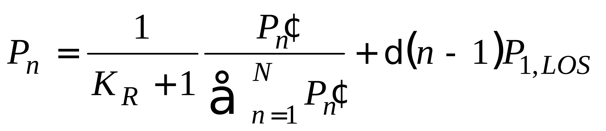
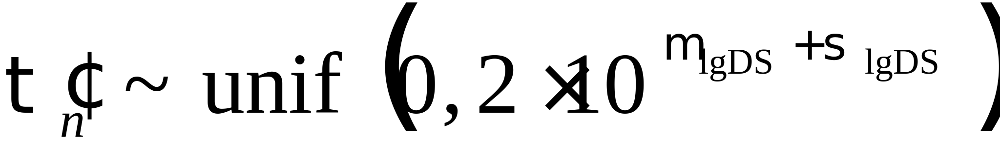
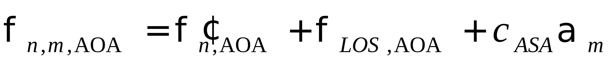
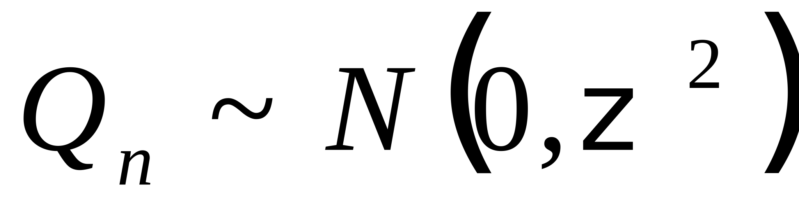
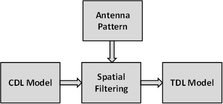

Technical Specification Group Radio Access Network;
Study on channel model for frequencies from 0.5 to 100 GHz
(Release 17)
The present document has been developed within the 3rd
Generation Partnership Project (3GPP TM) and may be further
elaborated for the purposes of 3GPP.
The present document has not been subject to any approval process by the
3GPP Organizational Partners and shall not be implemented.
This Specification is provided for future development work within 3GPP
only. The Organizational Partners accept no liability for any use of
this Specification.
Specifications and Reports for implementation of the 3GPP TM
system should be obtained via the 3GPP Organizational Partners'
Publications Offices.
3GPP
Postal address
3GPP support office address
650 Route des Lucioles - Sophia Antipolis
Valbonne - FRANCE
Tel.: +33 4 92 94 42 00 Fax: +33 4 93 65 47 16
Internet
http://www.3gpp.org
Copyright
Notification
No part may be reproduced except as authorized by written
permission.
The copyright and the foregoing restriction extend to reproduction in
all media.
UMTS™ is a Trade Mark of ETSI registered for the benefit of its
members
3GPP™ is a Trade Mark of ETSI registered for the benefit of its
Members and of the 3GPP Organizational Partners
LTE™ is a Trade Mark of ETSI registered for the benefit of its Members
and of the 3GPP Organizational Partners
GSM® and the GSM logo are registered and owned by the GSM
Association
This Technical Report has been produced by the 3rd
Generation Partnership Project (3GPP).
The contents of the present document are subject to continuing work
within the TSG and may change following formal TSG approval. Should the
TSG modify the contents of the present document, it will be re-released
by the TSG with an identifying change of release date and an increase in
version number as follows:
Version x.y.z
where:
x the first digit:
1 presented to TSG for information;
2 presented to TSG for approval;
3 or greater indicates TSG approved document under change
control.
y the second digit is incremented for all changes of substance, i.e.
technical enhancements, corrections, updates, etc.
z the third digit is incremented when editorial only changes have
been incorporated in the document.
In the present document, modal verbs have the following meanings:
shall indicates a mandatory requirement to do
something
shall not indicates an interdiction (prohibition) to
do something
The constructions "shall" and "shall not" are confined to the context
of normative provisions, and do not appear in Technical Reports.
The constructions "must" and "must not" are not used as substitutes
for "shall" and "shall not". Their use is avoided insofar as possible,
and they are not used in a normative context except in a direct citation
from an external, referenced, non-3GPP document, or so as to maintain
continuity of style when extending or modifying the provisions of such a
referenced document.
should indicates a recommendation to do
something
should not indicates a recommendation not to do
something
may indicates permission to do something
need not indicates permission not to do
something
The construction "may not" is ambiguous and is not used in normative
elements. The unambiguous constructions "might not" or "shall not" are
used instead, depending upon the meaning intended.
can indicates that something is possible
cannot indicates that something is impossible
The constructions "can" and "cannot" are not substitutes for "may"
and "need not".
will indicates that something is certain or expected
to happen as a result of action taken by an agency the behaviour of
which is outside the scope of the present document
will not indicates that something is certain or
expected not to happen as a result of action taken by an agency the
behaviour of which is outside the scope of the present document
might indicates a likelihood that something will
happen as a result of action taken by some agency the behaviour of which
is outside the scope of the present document
might not indicates a likelihood that something will
not happen as a result of action taken by some agency the behaviour of
which is outside the scope of the present document
In addition:
is (or any other verb in the indicative mood)
indicates a statement of fact
is not (or any other negative verb in the indicative
mood) indicates a statement of fact
The constructions "is" and "is not" do not indicate requirements.
1 Scope
The present document captures the findings of the study item, "Study
on channel model for frequency spectrum above 6 GHz" [2] and from
further findings of the study item, "Study on New Radio Access
Technology [22]" and the study item "Study on Channel Modeling for
Indoor Industrial Scenarios [23]". The channel models in the present
document address the frequency range 0.5-100 GHz. The purpose of this TR
is to help TSG RAN WG1 to properly model and evaluate the performance of
physical layer techniques using the appropriate channel model(s).
Therefore, the TR will be kept up-to-date via CRs in the future.
This document relates to the 3GPP evaluation methodology and covers
the modelling of the physical layer of both Mobile Equipment and Access
Network of 3GPP systems.
This document is intended to capture the channel model(s) for
frequencies from 0.5GHz up to 100GHz.
2 References
The following documents contain provisions which, through reference
in this text, constitute provisions of the present document.
- References are either specific (identified by date of publication,
edition number, version number, etc.) or non‑specific.
- For a specific reference, subsequent revisions do not apply.
- For a non-specific reference, the latest version applies. In the
case of a reference to a 3GPP document (including a GSM document), a
non-specific reference implicitly refers to the latest version of that
document in the same Release as the present document.
[1] 3GPP TR 21.905: "Vocabulary for 3GPP Specifications".
[2] 3GPP TD RP-151606: "Study on channel model for frequency spectrum
above 6 GHz".
[3] 3GPP TR 36.873 (V12.2.0): "Study on 3D channel model for
LTE".
[4] 3GPP RP-151847: "Report of RAN email discussion about >6GHz
channel modelling", Samsung.
[5] 3GPP TD R1-163408: "Additional Considerations on Building
Penetration Loss Modelling for 5G System Performance Evaluation",
Straight Path Communications.
[7] Glassner, A S: "An introduction to ray tracing. Elsevier,
1989".
[8] McKown, J. W., Hamilton, R. L.: "Ray tracing as a design tool for
radio networks, Network, IEEE, 1991(6): 27-30".
[9] Kurner, T., Cichon, D. J., Wiesbeck, W.: "Concepts and results
for 3D digital terrain-based wave propagation models: An overview", IEEE
J.Select. Areas Commun., vol. 11, pp. 1002–1012, 1993.
[10] Born, M., Wolf, E.: "Principles of optics: electromagnetic
theory of propagation, interference and diffraction of light", CUP
Archive, 2000.
[11] Friis, H.: "A note on a simple transmission formula", proc. IRE,
vol. 34, no. 5, pp. 254–256, 1946.
[12] Kouyoumjian, R.G., Pathak, P.H.: "A uniform geometrical theory
of diffraction for an edge in a perfectly conducting surface" Proc.
IEEE, vol. 62, pp. 1448–1461, Nov. 1974.
[13] Pathak, P.H., Burnside, W., Marhefka, R.: "A Uniform GTD
Analysis of the Diffraction of Electromagnetic Waves by a Smooth Convex
Surface", IEEE Transactions on Antennas and Propagation, vol. 28, no. 5,
pp. 631–642, 1980.
[15] 3GPP TR36.101: "User Equipment (UE) radio transmission and
reception".
[16] 3GPP TR36.104: "Base Station (BS) radio transmission and
reception".
[17] Asplund, H., Medbo, J., Göransson, B., Karlsson, J., Sköld, J.:
"A simplified approach to applying the 3GPP spatial channel model", in
Proc. of PIMRC 2006.
[18] ITU-R Rec. P.1816: "The prediction of the time and the spatial
profile for broadband land mobile services using UHF and SHF bands".
[19] ITU-R Rec. P.2040-1: "Effects of building materials and
structures on radiowave propagation above about 100 MHz", International
Telecommunication Union Radiocommunication Sector ITU-R, 07/2015.
[20] ITU-R Rec. P.527-3: "Electrical characteristics of the surface
of the earth", International Telecommunication Union Radiocommunication
Sector ITU-R, 03/1992.
[22] 3GPP TD RP-162469: "Study on New Radio (NR) Access
Technology".
[23] 3GPP TD RP-182138: "SID on Channel Modeling for Indoor
Industrial Scenarios".
3 Definitions, symbols
and abbreviations
3.1 Definitions
For the purposes of the present document, the terms and definitions
given in TR 21.905 [1] apply.
3.2 Symbols
For the purposes of the present document, the following symbols
apply:
antenna radiation power pattern
maximum attenuation
d2D 2D distance between Tx and Rx
d3D 3D distance between Tx and Rx
antenna element spacing in horizontal
direction
antenna element spacing in vertical
direction
f frequency
fc center frequency / carrier frequency
Frx,u,θ Receive antenna element u field
pattern in the direction of the spherical basis vector
Frx,u,ϕ Receive antenna element u field
pattern in the direction of the spherical basis vector
Ftx,s,θ Transmit antenna element s field
pattern in the direction of the spherical basis vector
Frx,s,ϕ Transmit antenna element s field
pattern in the direction of the spherical basis vector
hBS antenna height for BS
hUT antenna height for UT
spherical unit vector of
cluster n, ray m, for receiver
spherical unit vector of
cluster n, ray m, for transmitter
α bearing angle
β downtilt angle
γ slant angle
wavelength
κ cross-polarization power ratio in linear scale
μlgASA mean value of 10-base logarithm of azimuth
angle spread of arrival
μlgASD mean value of 10-base logarithm of azimuth
angle spread of departure
μlgDS mean value of 10-base logarithm of delay
spread
μlgZSA mean value of 10-base logarithm of zenith
angle spread of arrival
μlgZSD mean value of 10-base logarithm of zenith
angle spread of departure
LOS probability
side-lobe attenuation in vertical
direction
σlgASA standard deviation of 10-base logarithm of
azimuth angle spread of arrival
σlgASD standard deviation of 10-base logarithm of
azimuth angle spread of departure
σlgDS standard deviation value of 10-base
logarithm of delay spread
σlgZSA standard deviation of 10-base logarithm of
zenith angle spread of arrival
σlgZSD standard deviation of 10-base logarithm of
zenith angle spread of departure
standard deviation of SF
azimuth angle
zenith angle
spherical basis vector (unit
vector) for GCS
spherical basis vector (unit
vector) for LCS
horizontal 3 dB beamwidth of
an antenna
spherical basis vector (unit
vector), orthogonal to , for GCS
spherical basis vector (unit
vector), orthogonal to , for LCS
electrical steering angle in vertical
direction
vertical 3 dB beamwidth of
an antenna
ψ Angular displacement between two pairs of unit vectors
3.3 Abbreviations
For the purposes of the present document, the abbreviations given in
TR 21.905 [1] and the following apply. An abbreviation defined in the
present document takes precedence over the definition of the same
abbreviation, if any, in TR 21.905 [1].
2D two-dimensional
3D three-dimensional
AOA Azimuth angle Of Arrival
AOD Azimuth angle Of Departure
AS Angular Spread
ASA Azimuth angle Spread of Arrival
ASD Azimuth angle Spread of Departure
BF Beamforming
BS Base Station
BP Breakpoint
BW Beamwidth
CDF Cumulative Distribution Function
CDL Clustered Delay Line
CRS Common Reference Signal
D2D Device-to-Device
DFT Discrete Fourier Transform
DS Delay Spread
GCS Global Coordinate System
IID Independent and identically distributed
InF Indoor Factory
InF-SL Indoor Factory with Sparse clutter and Low base station height
(both Tx and Rx are below the average height of the clutter)
InF-DL Indoor Factory with Dense clutter and Low base station height
(both Tx and Rx are below the average height of the clutter)
InF-SH Indoor Factory with Sparse clutter and High base station
height (Tx or Rx elevated above the clutter)
InF-DH Indoor Factory with Dense clutter and High base station height
(Tx or Rx elevated above the clutter)
InF-HH Indoor Factory with High Tx and High Rx (both elevated above
the clutter)
InH Indoor Hotspot
IRR Infrared Reflecting
ISD Intersite Distance
K Ricean K factor
LCS Local Coordinate System
LOS Line Of Sight
MIMO Multiple-Input-Multiple-Output
MPC Multipath Component
NLOS Non-LOS
O2I Outdoor-to-Indoor
O2O Outdoor-to-Outdoor
OFDM Orthogonal Frequency-Division Multiplexing
PAS Power angular spectrum
PL Path Loss
PRB Physical Resource Block
RCS Radar cross-section
RMa Rural Macro
RMS Root Mean Square
RSRP Reference Signal Received Power
Rx Receiver
SCM Spatial Channel Model
SINR Signal-to-Interference-plus-Noise Ratio
SIR Signal-to-Interference Ratio
SSCM Statistical Spatial Channel Model
SF Shadow Fading
SLA Sidelobe Attenuation
TDL Tapped Delay Line
TOA Time Of Arrival
TRP Transmission Reception Point
Tx Transmitter
UMa Urban Macro
UMi Urban Micro
UT User Terminal
UTD Uniform Theory of Diffraction
V2V Vehicle-to-Vehicle
XPR Cross-Polarization Ratio
ZOA Zenith angle Of Arrival
ZOD Zenith angle Of Departure
ZSA Zenith angle Spread of Arrival
ZSD Zenith angle Spread of Departure
4 Introduction
At TSG RAN #69 meeting the Study Item Description on "Study on
channel model for frequency spectrum above 6 GHz" was approved [2]. This
study item covers the identification of the status/expectation of
existing information on high frequencies (e.g. spectrum allocation,
scenarios of interest, measurements, etc), and the channel model(s) for
frequencies up to 100 GHz. This technical report documents the channel
model(s). The new channel model has to a large degree been aligned with
earlier channel models for <6 GHz such as the 3D SCM model (TR
36.873) or IMT-Advanced (ITU-R M.2135). The new model supports
comparisons across frequency bands over the range 0.5-100 GHz. The
modelling methods defined in this technical report are generally
applicable over the range 0.5-100 GHz, unless explicitly mentioned
otherwise in this technical report for specific modelling method,
involved parameters and/or scenario.
Subsequently, at the TSG RAN #81 meeting the Study Item Description
"Study on Channel Modeling for Indoor Industrial Scenarios" was approved
[23]. The findings from this study item is also captured in the present
technical report. The Industrial channel model was developed by
considering new measurements and information in the literature. An
overview list of all such contributions and sources is available in tdoc
R1-1909706.
The channel model is applicable for link and system level simulations
in the following conditions:
- For system level simulations, supported scenarios are urban
microcell street canyon, urban macrocell, indoor office, rural
macrocell, and indoor factory.
- Bandwidth is supported up to 10% of the center frequency but no
larger than 2GHz.
- Mobility of either one end of the link or both ends of the link is
supported
- For the stochastic model, spatial consistency is supported by
correlation of LSPs and SSPs as well as LOS/NLOS state.
- Large array support is based on far field assumption and stationary
channel over the size of the array.
5 Void
6
Status/expectation of existing information on high frequencies
6.1 Channel modelling
works outside of 3GPP
This clause summarizes the channel modelling work outside of 3GPP
based on the input from companies.
Groups and projects with channel
models:
- METIS (Mobile and wireless communications Enablers for the
Twenty-twenty Information Society)
- MiWEBA (Millimetre-Wave Evolution for Backhaul and Access)
- ITU-R M
- COST2100
- IEEE 802.11
- NYU WIRELESS: interdisciplinary academic research center
- Fraunhofer HHI has developed the QuaDRiGa channel model, Matlab
implementation is available at http://quadriga-channel-model.de
Groups and projects which intend to develop channel
models:
- 5G mmWave Channel Model Alliance: NIST initiated, North America
based
- mmMAGIC (Millimetre-Wave Based Mobile Radio Access Network for
Fifth Generation Integrated Communications): Europe based
- IMT-2020 5G promotion association: China based
METIS Channel Models:
- Identified 5G requirements (e.g., wide frequency range, high
bandwidth, massive MIMO, 3-D and accurate polarization modelling)
- Performed channel measurements at various bands between 2GHz and 60
GHz
- Provided different channel model methodologies (map-based model,
stochastic model or hybrid model). For stochastic model, the proposed
channel is focused on outdoor square, Indoor cafeteria and indoor
shopping mall scenarios.
MiWEBA Channel Models:
- Addressed various challenges: Shadowing, spatial consistency,
environment dynamics, spherical wave modelling, dual mobility Doppler
model, ratio between diffuse and specular reflections, polarization
- Proposed Quasi-deterministic channel model
- Performed channel measurements at 60 GHz
- Focused on university campus, street canyon, hotel lobby, backhaul,
and D2D scenarios.
ITU-R M Channel Models:
- Addressed the propagation loss and atmospheric loss on mmW
- Introduced enabling antenna array technology and semiconductor
technology
- Proposed deployment scenarios, focused on dense urban environment
for high data rate service: indoor shopping mall, indoor enterprise, in
home, urban hotspot in a square/street, mobility in city.
COST2100 and COST IC1004 Channel Models:
- Geometry-based stochastic channel model that reproduce the
stochastic properties of MIMO channels over time, frequency and space.
It is a cluster-level model where the statistics of the large scale
parameters are always guaranteed in each series of channel
instances.
NYU WIRELESS Channel Models:
- Conducted many urban propagation measurements on 28/38/60/73 GHz
bands for both outdoor and indoor channels, measurements are
continuing.
- Proposed 3 areas for 5G mmWave channel modelling which are small
modifications or extensions from 3GPP's current below 6GHz channel
models
- 1) LOS/NLOS/blockage modelling (a squared exponential term); 2).
Wideband power delay profiles (time clusters and spatial lobes for a
simple extension to the existing 3GPP SSCM model); 3). Physics-based
path loss model (using the existing 3GPP path loss equations, but simply
replacing the "floating" optimization parameter with a deterministic 1 m
"close-in" free space reference term in order to provide a standard and
stable definition of "path loss exponent" across all different parties,
scenarios, and frequencies).
802.11 ad/ay Channel Models:
- Conducted ray-tracing methodology on 60 GHz band indoor channels,
including conference room, cubicle, living room scenarios
- Intra cluster parameters were proposed in terms of ray excess delay
and ray power distribution
- Human blockage models were proposed in terms of blockage
probability and blockage attenuation
5G mmWave Channel Model Alliance:
- Will provide a venue to promote fundamental research into
measurement, analysis, identification of physical parameters, and
statistical representations of mmWave propagation channels.
- Divided into six collaborative working groups that include a
Steering Committee; Modelling Methodology Group; Measurement Methodology
Group; and groups that focus on defining and parameterizing Indoor,
Outdoor, and Emerging Usage Scenarios.
- Sponsored by Communications Technology Research Laboratory within
the NIST.
mmMAGIC:
- Brings together major infrastructure vendors, major European
operators, leading research institutes and universities, measurement
equipment vendors and one SME.
- Will undertake extensive radio channel measurements in the 6-100
GHz range.
- Will develop and validate advanced channel models that will be used
for rigorous validation and feasibility analysis of the proposed
concepts and system, as well as for usage in regulatory and standards
fora.
IMT-2020 5G promotion association
- Jointly established by three ministries of China based on the
original IMT-Advanced promotion group
- Members including the main operators, vendors, universities and
research institutes in China
- The major platform to promote 5G technology research in China and
to facilitate international communication and cooperation
QuaDRiGa (Fraunhofer HHI)
- QuaDRiGa (QUAsi Deterministic RadIo channel GenerAtor) was
developed at the Fraunhofer Heinrich Hertz Institute within the Wireless Communications and
Networks Department to enable the modelling of MIMO radio channels
for specific network configurations, such as indoor, satellite or
heterogeneous configurations.
- Besides being a fully-fledged 3D geometry-based stochastic channel
model (well aligned with TR36.873), QuaDRiGa contains a collection of
features created in SCM(e) and WINNER channel models along with novel
modelling approaches which provide features to enable
quasi-deterministic multi-link tracking of users (receiver) movements in
changing environments. QuaDRiGa supports Massive MIMO modelling enabled
through a new multi-bounce scattering approach and spherical wave
propagation. It will be continuously extended with features required by
5G and frequencies beyond 6 GHz. The QuaDRiGa model is supported by data
from extensive channel measurement campaigns at 10 / 28 / 43 / 60 / 82
GHz performed by the same group.
6.2 Scenarios of interest
Brief description of the key scenarios of interest identified (see
note):
(1) UMi (Street canyon, open area) with O2O and O2I: This is similar
to 3D-UMi scenario, where the BSs are mounted below rooftop levels of
surrounding buildings. UMi open area is intended to capture real-life
scenarios such as a city or station square. The width of the typical
open area is in the order of 50 to 100 m.
Example: [Tx height:10m, Rx height: 1.5-2.5 m, ISD: 200m]
(2) UMa with O2O and O2I: This is similar to 3D-UMa scenario, where
the BSs are mounted above rooftop levels of surrounding buildings.
Example: [Tx height:25m, Rx height: 1.5-2.5 m, ISD: 500m]
(3) Indoor: This scenario is intended to capture various typical
indoor deployment scenarios, including office environments, and shopping
malls. The typical office environment is comprised of open cubicle
areas, walled offices, open areas, corridors etc. The BSs are mounted at
a height of 2-3 m either on the ceilings or walls. The shopping malls
are often 1-5 stories high and may include an open area (or "atrium")
shared by several floors. The BSs are mounted at a height of
approximately 3 m on the walls or ceilings of the corridors and
shops.
(4) Backhaul, including outdoor above roof top backhaul in urban area
and street canyon scenario where small cell BSs are placed at lamp
posts.
(5) D2D/V2V. Device-to-device access in open area, street canyon, and
indoor scenarios. V2V is a special case where the devices are
mobile.
(6) Other scenarios such as Stadium (open-roof) and Gym
(close-roof).
(7) Indoor industrial scenarios
Note: The scenarios of interest are based on the plenary email
discussion and different from the supported scenarios in clause 7. The
indoor industrial scenarios were identified at a later stage in the TSG
RAN #81 meeting.
6.3 Channel measurement
capabilities
The measurement capability as reported by each company is summarized
in the following table.
Table 6.3-1: Channel measurement capabilities
6 - 20 GHz
20 - 30 GHz
30 - 60 GHz
>60 GHz
Urban macro
CMCC
Nokia/Aalborg
Nokia/Aalborg
NYU
Urban micro
Aalto University
CMCC
Ericsson
Intel/Fraunhofer HHI
Nokia/Aalborg
NTT DOCOMO
Orange
AT&T
Aalto University
CMCC
Huawei
Intel/Fraunhofer HHI
Nokia/Aalborg
NTT DOCOMO
NYU
Qualcomm
Samsung
CATT
KT
ETRI
ITRI/CCU
ZTE
AT&T
Huawei
Intel/Fraunhofer HHI
NTT DOCOMO
Qualcomm
CATT
ETRI
ITRI/CCU
ZTE
AT&T
Aalto University
Huawei
Intel/Fraunhofer HHI
NYU
Indoor
Aalto University
CMCC
Ericsson
Huawei
Intel/Fraunhofer HHI
Nokia/Aalborg
NTT DOCOMO
Orange
AT&T
Alcatel-Lucent
Aalto University
BUPT
CMCC
Huawei
Intel/Fraunhofer HHI
Nokia/Aalborg
NTT DOCOMO
NYU
Qualcomm
Samsung
CATT
KT
ETRI
ITRI/CCU
ZTE
AT&T
Ericsson
Huawei
Intel/Fraunhofer HHI
NTT DOCOMO
NYU
Qualcomm
CATT
ETRI
ITRI/CCU
ZTE
AT&T
Aalto University
Huawei
Intel/Fraunhofer HHI
NYU
O2I
Ericsson
Huawei
Intel/Fraunhofer HHI
Nokia/Aalborg
NTT DOCOMO
Orange
AT&T
Alcatel-Lucent
Ericsson
Huawei
Intel/Fraunhofer HHI
NTT DOCOMO
NYU
Samsung
KT
AT&T
Ericsson
Huawei
Intel/Fraunhofer HHI
NTT DOCOMO
AT&T
Huawei
Intel/Fraunhofer HHI
6.4 Modelling objectives
The requirements for channel modelling are as follows.
- Channel model SI should take into account the outcome of RAN-level
discussion in the '5G' requirement study item
- Complexity in terms of Description, Generating channel
coefficients, development complexity and Simulation time should be
considered.
- Support frequency range up to 100 GHz.
- The critical path of the SI is 6 – 100 GHz
- Take care of mmW propagation aspects such as blocking and
atmosphere attenuation.
- The model should be consistent in space, time and frequency
- Support large channel bandwidths (up to 10% of carrier
frequency)
- Aim for the channel model to cover a range of coupling loss
considering current typical cell sizes, e.g. up to km-range macro cells.
Note: This is to enable investigation of the relevance of the 5G system
using higher frequency bands to existing deployments.
- Accommodate UT mobility
- Mobile speed up to 500 km/h.
- Develop a methodology considering that model extensions to D2D and
V2V may be developed in future SI.
- Support large antenna arrays
7 Channel model(s) for 0.5-100
GHz
7.1 Coordinate system
7.1.1 Definition
A coordinate system is defined by the x, y, z axes, the spherical
angles and the spherical unit vectors as shown in Figure 7.1.1. Figure
7.1.1 defines the zenith angle and the
azimuth angle in a Cartesian coordinate
system. Note that points to the zenith
and points to the horizon. The field
component in the direction of is given
by and the field component in the
direction of is given by .
Figure 7.1.1: Definition of spherical angles and spherical unit
vectors in a Cartesian coordinate system, whereis the given direction, and are the
spherical basis vectors
7.1.2 Local and global
coordinate systems
A Global Coordinate System (GCS) is defined for a system comprising
multiple BSs and UTs. An array antenna for a BS or a UT can be defined
in a Local Coordinate System (LCS). An LCS is used as a reference to
define the vector far-field that is pattern and polarization, of each
antenna element in an array. It is assumed that the far-field is known
in the LCS by formulae. The placement of an array within the GCS is
defined by the translation between the GCS and a LCS. The orientation of
the array with respect to the GCS is defined in general by a sequence of
rotations (described in clause 7.1.3). Since this orientation is in
general different from the GCS orientation, it is necessary to map the
vector fields of the array elements from the LCS to the GCS. This
mapping depends only on the orientation of the array and is given by the
equations in clause 7.1.3. Note that any arbitrary mechanical
orientation of the array can be achieved by rotating the LCS with
respect to the GCS.
7.1.3 Transformation from a
LCS to a GCS
A GCS with coordinates (x, y, z, , ) and unit
vectors (, ) and an LCS with "primed" coordinates
(x', y', z', ,
) and "primed" unit vectors (, ) are defined
with a common origins in Figures 7.1.3-1 and 7.1.3-2. Figure 7.1.3-1
illustrates the sequence of rotations that relate the GCS (gray) and the
LCS (blue). Figure 7.1.3-2 shows the coordinate direction and unit
vectors of the GCS (gray) and the LCS (blue). Note that the vector
fields of the array antenna elements are defined in the LCS. In Figure
7.1.3-1 we consider an arbitrary 3D-rotation of the LCS with respect to
the GCS given by the angles α, β, γ. The set
of angles α, β, γ can also be termed as the
orientation of the array antenna with respect to the GCS.
Note that the transformation from a LCS to a GCS depends only on the
angles α, β, γ. The angle α is
called the bearing angle, β is called the downtilt angle and
γ is called the slant angle.
Figure 7.1.3-1: Orienting the LCS (blue) with respect to the GCS
(gray) by a sequence of 3 rotations: α, β,
γ.
Figure 7.1.3-2: Definition of spherical coordinates and unit vectors
in both the GCS and LCS.
Let denote an antenna element pattern
in the LCS and denote the same antenna
element pattern in the GCS. Then the two are related simply by
(7.1-1)
with and given by (7.1-7) and (7.1-8).
Let us denote the polarized field components in the LCS by , and in the
GCS by , .
Then they are related by equation (7.1-11).
Any arbitrary 3D rotation can be specified by at most 3 elemental
rotations, and following the framework of Figure 7.1.3-1, a series of
rotations about the z, and axes are assumed here, in that order. The
dotted and double-dotted marks indicate that the rotations are
intrinsic, which means that they are the result of one (⋅) or two (⋅⋅)
intermediate rotations. In other words, the axis is the original y axis after the first
rotation about z, and the axis is the
original x axis after the first rotation about z and the second rotation
about. A first rotation of α
about z sets the antenna bearing angle (i.e. the sector
pointing direction for a BS antenna element). The second rotation of
β about sets the antenna
downtilt angle. Finally, the third rotation of γ about sets the antenna slant angle. The orientation
of the x, y and z axes after all three
rotations can be denoted as , and . These
triple-dotted axes represents the final orientation of the LCS, and for
notational purposes denoted as the x', y' and
z' axes (local or "primed" coordinate system).
In order to establish the equations for transformation of the
coordinate system and the polarized antenna field patterns between the
GCS and the LCS, it is necessary to determine the composite rotation
matrix that describes the transformation of point (x,
y, z) in the GCS into point (x', y',
z') in the LCS. This rotation matrix is computed as the product
of three elemental rotation matrices. The matrix to describe rotations
about the z,and axes by the angles α, β and
γ respectively and in that order is defined as
(7.1-2)
The reverse transformation is given by the inverse of R,
which is also equal to the transpose of R since it is
orthogonal.
(7.1-3)
The simplified forward and reverse composite rotation matrices are
given by
(7.1-4)
and
(7.1-5)
These transformations can be used to derive the angular and
polarization relationships between the two coordinate systems.
In order to establish the angular relationships, consider a point
(x, y, z) on the unit sphere defined by the
spherical coordinates (ρ=1, θ, φ), where
ρ is the unit radius, θ is the zenith angle measured
from the +z-axis, and φ is the azimuth angle measured
from the +x-axis in the x-y plane. The
Cartesian representation of that point is given by
(7.1-6)
The zenith angle is computed as and
the azimuth angle as , where , and are the Cartesian unit vectors. If this point
represents a location in the GCS defined by θ and φ,
the corresponding position in the LCS is given by , from which local angles θ' and
φ' can be computed. The results are given in equations (7.1-7)
and (7.1-8).
(7.1-7)
(7.1-8)
These formulae relate the spherical angles (θ, φ)
of the GCS to the spherical angles (θ', φ') of the LCS
given the rotation operation defined by the angles (α,
β, γ).
Let us denote the polarized field components, in the GCS
and, in
the LCS. These are related by
(7.1-9)
In this equation, and represent the spherical unit vectors of the
GCS, and and are the representations in the LCS. The
forward rotation matrix R transforms the LCS unit vectors into the GCS
frame of reference. These pairs of unit vectors are orthogonal and can
be represented as shown in Figure 7.1.3-3.
Figure 7.1.3-3: Rotation of the spherical basis vectors by an angle
ψ due to the orientation of the LCS with respect to the GCS
Assuming an angular displacement of ψ between the two pairs
of unit vectors, the rotation matrix of equation (7.1-9) can be further
simplified as:
(7.1-10)
and equation (7.1-9) can be written as:
(7.1-11)
The angle ψ can be computed in numerous ways from equation
(7.1-10), with one such way approach being
(7.1-12)
The dot products are readily computed using the Cartesian
representation of the spherical unit vectors. The general expressions
for these unit vectors are given by
(7.1-13)
and
(7.1-14)
The angle ψ can be expressed as a function of mechanical
orientation (α, β, γ) and spherical position
(θ, φ), and is given by
(7.1-15)
It can be shown thatandcan be expressed as:
(7.1-16)
(7.1-17)
7.1.4
Transformation from an LCS to a GCS for downtilt angle only
In this clause equations are provided for the transformation from LCS
to GCS assuming that the orientation of the LCS (with respect to the
GCS) is such that the bearing angle α=0, the downtilt angle
β is non-zero and the slant angle γ=0. In other words
the y'-axis of the LCS is parallel to the y-axis of
the GCS. Considering a BS antenna element the x-axis of the GCS
is aligned with the pointing direction of the sector. Mechanical
downtilt is modelled as a rotation of the LCS around the
y-axis. For zero mechanical downtilt the LCS coincides with the
GCS.
This transformation relates the spherical angles (,) in the
global coordinate system to spherical angles (,) in the local
(antenna-fixed) coordinate system and is defined as follows:
(7.1-18)
(7.1-19)
where is the mechanical tilt angle
around the y-axis as defined in Figure 7.1.4. Note that the
equations (7.1-7), (7.1-8) reduce to equations (7.1-18), (7.1-19) if
both α and γ are zero.
The antenna element pattern in the GCS
is related to the antenna element pattern in the LCS by the relation
(7.1-20)
with and given by (7.1-18) and (7.1-19).
Figure 7.1.4: Definition of angles and
unit vectors when the LCS has been rotated an angle around the y-axis of the GCS
For a mechanical tilt angle , the
global coordinate system field components and , are
calculated from the field components
and of the radiation pattern in the
local (antenna-fixed) coordinate system as:
(7.1-21)
(7.1-22)
where and are defined as in (7.1-18) and (7.1-19), and
is defined as:
. (7.1-23)
Note that the equation (7.1-15) is reduced to equation (7.1-23) if
both α and γ are zero.
As an example, in the horizontal cut, i.e., for , equations (7.1-18), (7.1-19) and (7.1-23)
become
(7.1-24)
(7.1-25)
(7.1-26)
7.2 Scenarios
The detailed scenario description in this clause can be used for
channel model calibration.
UMi-street canyon and UMa
Details on UMi-street canyon and UMa scenarios are listed in Table
7.2-1.
Table 7.2-1: Evaluation parameters for UMi-street canyon and UMa
scenarios
Parameters
UMi - street canyon
UMa
Cell layout
Hexagonal grid, 19 micro sites, 3 sectors
per site (ISD = 200m)
Hexagonal grid, 19 macro sites, 3 sectors
per site (ISD = 500m)
BS antenna height
10m
25m
UT location
Outdoor/indoor
Outdoor and indoor
Outdoor and indoor
LOS/NLOS
LOS and NLOS
LOS and NLOS
Height
Same as 3D-UMi in TR36.873
Same as 3D-UMa in TR36.873
Indoor UT ratio
80%
80%
UT mobility (horizontal plane
only)
3km/h
3km/h
Min. BS - UT distance
(2D)
10m
35m
UT distribution
(horizontal)
Uniform
Uniform
Indoor-office
Details on indoor-office scenarios are listed in Table 7.2-2 and
presented in Figure 7.2-1. More details, if necessary, can be added to
Figure 7.2-1.
Table 7.2-2: Evaluation parameters for indoor-office scenarios
Parameters
Indoor - office
open office
Indoor - office
mixed office
Layout
Room size (WxLxH)
120mx50mx3m
ISD
20m
BS antenna height
3 m (ceiling)
UT location
LOS/NLOS
LOS and NLOS
Height
1 m
UT mobility (horizontal plane only)
3 km/h
Min. BS - UT distance (2D)
0
UT distribution (horizontal)
Uniform
Note: The only difference between the open office and mixed office
models in this TR is the line of sight probability.
Figure 7.2-1: Layout of indoor office scenarios.
RMa
The rural deployment scenario focuses on larger and continuous
coverage. The key characteristics of this scenario are continuous wide
area coverage supporting high speed vehicles. This scenario will be
noise-limited and/or interference-limited, using macro TRPs. Details of
RMa scenario is described in Table 7.2-3.
Table 7.2-3: Evaluation parameters for RMa
Parameters
RMa
Carrier Frequency
Up to 7Ghz
BS height
35m
Layout
Hexagonal grid, 19 Macro sites, 3sectors per site, ISD = 1732m or
5000m
UT height
1.5m
UT distribution
Uniform
Indoor/Outdoor
50% indoor and 50% in car
LOS/NLOS
LOS and NLOS
Min BS - UT distance(2D)
35m
Indoor Factory (InF)
The indoor factory (InF) scenario focuses on factory halls of varying
sizes and with varying levels of density of "clutter", e.g. machinery,
assembly lines, storage shelves, etc. Details of the InF scenario are
listed in Table 7.2-4.
Table 7.2-4: Evaluation parameters for InF
InF
Parameters
InF-SL
(sparse clutter, low BS)
InF-DL
(dense clutter, low BS)
InF-SH
(sparse clutter, high BS)
InF-DH
(dense clutter, high BS)
InF-HH
(high Tx, high Rx)
Layout
Room size
Rectangular: 20-160000 m2
Ceiling height
5-25 m
5-15 m
5-25 m
5-15 m
5-25 m
Effective clutter height \(h_{c}\)
< Ceiling height, 0-10 m
External wall and ceiling type
Concrete or metal walls and ceiling with metal-coated
windows
Clutter type
Big machineries composed of regular metallic surfaces.
For example: several mixed production areas with open spaces and
storage/commissioning areas
Small to medium metallic machinery and objects with irregular
structure.
For example: assembly and production lines surrounded by mixed
small-sized machineries.
Big machineries composed of regular metallic surfaces.
For example: several mixed production areas with open spaces and
storage/commissioning areas
Small to medium metallic machinery and objects with irregular
structure.
For example: assembly and production lines surrounded by mixed
small-sized machineries.
Any
Typical clutter size, \(d_{clutter}\)
10 m
2 m
10 m
2 m
Any
Clutter density \(r\)
(percentage of surface area occupied by clutter)
Low clutter density
(<40%)
High clutter density
(≥40%)
Low clutter density
(<40%)
High clutter density
(≥40%)
Any
BS antenna height
Clutter-embedded, i.e. the BS antenna height is below
the average clutter height
Above clutter
Above clutter
UT location
LOS/NLOS
LOS and NLOS
100% LOS
Height
Clutter-embedded
Above clutter
7.3 Antenna modelling
This clause captures the antenna array structures considered in
this SI for calibration.
The BS antenna is modelled by a uniform rectangular panel array,
comprising MgNg panels, as illustrated in
Figure 7.3-1 with Mg being the number of panels in a
column and Ng being the number of panels in a row.
Furthermore the following properties apply:
- Antenna panels are uniformly spaced in the horizontal direction
with a spacing of dg,H and in the vertical direction
with a spacing of dg,V.
- On each antenna panel, antenna elements are placed in the vertical
and horizontal direction, where N is the number of columns,
M is the number of antenna elements with the same polarization
in each column.
- Antenna numbering on the panel illustrated in Figure 7.3-1 assumes
observation of the antenna array from the front (with x-axis pointing
towards broad-side and increasing y-coordinate for increasing column
number).
- The antenna elements are uniformly spaced in the horizontal
direction with a spacing of dH and in the vertical
direction with a spacing of dV.
- The antenna panel is either single polarized (P =1) or
dual polarized (P =2).
The rectangular panel array antenna can be described by the following
tuple .
Figure 7.3-1: Cross-polarized panel array antenna model
The antenna radiation power pattern of each antenna element is
generated according to Table 7.3-1.
Table 7.3-1: Radiation power pattern of a single antenna element
Parameter
Values
Vertical cut of the radiation power pattern (dB)
Horizontal cut of the radiation power pattern (dB)
3D radiation power pattern (dB)
Maximum directional gain of an antenna element
GE,max
8 dBi
7.3.1 Antenna port mapping
Legacy BS array antennas, i.e. uniform linear arrays with fix phase
shifts between its M elements to obtain a beamtilt in vertical
direction are modelled using complex weights
(7.3-1)
where m=1, …, M, \(\theta_{etilt}\) is the electrical vertical steering angle
defined between 0° and 180° (90° represents perpendicular to the array).
denotes the wavelength and the vertical element spacing.
7.3.2 Polarized antenna
modelling
In general the relationship between radiation field and power pattern
is given by:
. (7.3-2)
The following two models represent two options on how to determine
the radiation field patterns based on a defined radiation power
pattern.
Model-1:
In case of polarized antenna elements assume is
the polarization slant angle where degrees corresponds to a
purely vertically polarized antenna element and degrees correspond to a pair
of cross-polarized antenna elements. Then the antenna element field
components in and direction are given by
(7.3-3)
where , .
Note that the zenith and the azimuth field components , , and are
defined in terms of the spherical basis vectors of an LCS as defined in
Clause 7.1. The difference between the single-primed and the
double-primed components is that the single-primed field components
account for the polarization slant and the double-primed field
components do not. For a single polarized antenna (purely vertically
polarized antenna) we can write and
where is the 3D antenna radiation power pattern as
a function of azimuth angle and zenith angle in
the LCS as defined in Table 7.3-1 converted into linear scale.
Model-2:
In case of polarized antennas, the polarization is modelled as
angle-independent in both azimuth and elevation, in an LCS. For a
linearly polarized antenna, the antenna element field pattern, in the
vertical polarization and in the horizontal polarization, are given
by
(7.3-4)
and
, (7.3-5)
respectively, where is the polarization slant
angle and is the 3D antenna element
power pattern as a function of azimuth angle, and
elevation angle, in the LCS. Note that
degrees correspond to a purely vertically polarized antenna element. The
vertical and horizontal field directions are defined in terms of the
spherical basis vectors, and
respectively in the LCS as defined in Clause 7.1.2. Also =,
= and
= as
defined in Table 7.1-1.
7.4
Pathloss, LOS probability and penetration modelling
7.4.1 Pathloss
The pathloss models are summarized in Table 7.4.1-1 and the distance
definitions are indicated in Figure 7.4.1-1 and Figure 7.4.1-2. Note
that the distribution of the shadow fading is log-normal, and its
standard deviation for each scenario is given in Table 7.4.1-1.
Figure7.4.1-1: Definition of d2D and
d3D
for outdoor UTs
Figure 7.4.1-2: Definition of d2D-out,
d2D-in
and d3D-out, d3D-in for indoor
UTs.
Note that
(7.4-1)
Table 7.4.1-1: Pathloss models
Scenario
LOS/NLOS
Pathloss [dB], fc is in GHz and d is in
meters, see note 6
Note 1: Breakpoint distance d'BP
= 4 h'BSh'UTfc/c, where fc is the
centre frequency in Hz, c = 3.0×108 m/s is the
propagation velocity in free space, and h'BS and
h'UT are the effective antenna heights at the BS and
the UT, respectively. The effective antenna heights
h'BS and h'UT are computed as
follows: h'BS = hBS –
hE, h'UT =
hUT – hE, where
hBS and hUT are the actual
antenna heights, and hE is the effective environment height.
For UMi hE = 1.0m. For UMa hE=1m
with a probability equal to 1/(1+C(d2D,
hUT)) and chosen from a discrete uniform
distribution uniform(12,15,…,(hUT-1.5)) otherwise.
With C(d2D, hUT) given by
,
where
.
Note that hE depends on d2D
and hUT and thus needs to be independently
determined for every link between BS sites and UTs. A BS site may be a
single BS or multiple co-located BSs.
Note 2: The applicable frequency range of the PL formula in this
table is 0.5 < fc < fH
GHz, where fH = 30 GHz for RMa and
fH = 100 GHz for all the other scenarios. It is
noted that RMa pathloss model for >7 GHz is validated based on a
single measurement campaign conducted at 24 GHz.
Note 3: UMa NLOS pathloss is from TR36.873 with simplified format and
PLUMa-LOS = Pathloss of UMa LOS outdoor scenario.
Note 4: PLUMi-LOS = Pathloss of UMi-Street Canyon LOS
outdoor scenario.
Note 5: Break point distance dBP = 2π
hBShUTfc/c, where fc is the
centre frequency in Hz, c = 3.0 × 108 m/s is the
propagation velocity in free space, and hBS and
hUT are the antenna heights at the BS and the UT,
respectively.
Note 6: fc denotes the center frequency
normalized by 1GHz, all distance related values are normalized by 1m,
unless it is stated otherwise.
7.4.2 LOS probability
The Line-Of-Sight (LOS) probabilities are given in Table 7.4.2-1.
The parameters \(d_{clutter}\),
\(r\), and \(h_{c}\) are defined in Table 7.2-4
InF-HH
\[\Pr_{LOS} = 1\]
Note: The LOS probability is derived with assuming
antenna heights of 3m for indoor, 10m for UMi, and 25m for UMa
7.4.3 O2I penetration loss
7.4.3.1 O2I building penetration
loss
The pathloss incorporating O2I building penetration loss is modelled
as in the following:
(7.4-2)
where is the basic outdoor path loss
given in Clause 7.4.1, where is
replaced by . is the building penetration loss through the
external wall, is the inside loss
dependent on the depth into the building, and σP is
the standard deviation for the penetration loss.
is characterized as:
(7.4-3)
is an additional loss is added to
the external wall loss to account for non-perpendicular incidence; , is the penetration loss of material
i, example values of which can be found in Table 7.4.3-1; is proportion of i-th materials,
where ; and N is the number of
materials.
Table 7.4.3-1: Material penetration losses
Material
Penetration loss [dB]
Standard multi-pane glass
IRR glass
Concrete
Wood
Note: f is in GHz
Table 7.4.3-2 gives , and σP for two O2I
penetration loss models. The O2I penetration is UT-specifically
generated, and is added to the SF realization in the log domain.
Table 7.4.3-2: O2I building penetration loss model
Path loss through external wall:
in [dB]
Indoor loss:
in [dB]
Standard deviation:
σP in [dB]
Low-loss model
0.5
4.4
High-loss model
0.5
6.5
is minimum of two independently
generated uniformly distributed variables between 0 and 25 m for UMa and
UMi-Street Canyon, and between 0 and 10 m for RMa. shall be UT-specifically generated.
Both low-loss and high-loss models are applicable to UMa and
UMi-Street Canyon.
Only the low-loss model is applicable to RMa.
Only the high-loss model is applicable to InF.
The composition of low and high loss is a simulation parameter that
should be determined by the user of the channel models, and is dependent
on the use of metal-coated glass in buildings and the deployment
scenarios. Such use is expected to differ in different markets and
regions of the world and also may increase over years to new regulations
and energy saving initiatives. Furthermore, the use of such high-loss
glass currently appears to be more predominant in commercial buildings
than in residential buildings in some regions of the world (see
note).
Note: One example survey for the US market can be found in [5]. The
survey does not necessarily be representative for all the scenarios.
Other ratios outside of the survey should not be precluded.
For backwards compatibility with TR 36.873 [3], the following
building penetration model should be used for UMa and UMi
single-frequency simulations at frequencies below 6 GHz.
Table 7.4.3-3. O2I building penetration loss model for
single-frequency simulations <6 GHz
Parameter
Value
20 dB
0.5
with being a single,
link-specific, uniformly distributed variable between 0 and 25
m
0 dB
7 dB (note: replacing the respective value in Table 7.4.1-1)
7.4.3.2 O2I car penetration loss
The pathloss incorporating O2I car penetration loss is modelled as in
the following:
(7.4-4)
where is the basic outdoor path loss
given in Clause 7.4.1. μ = 9, and σP = 5.
The car penetration loss shall be UT-specifically generated. Optionally,
for metallized car windows, μ = 20 can be used. The O2I car
penetration loss models are applicable for at least 0.6-60 GHz.
7.4.4 Autocorrelation of
shadow fading
The long-term (log-normal) fading in the logarithmic scale around the
mean path loss PL (dB) is characterized by a Gaussian
distribution with zero mean and standard deviation. Due to the slow
fading process versus distance ∆x
(∆x is in the horizontal plane), adjacent fading values are
correlated. Its normalized autocorrelation function
R(∆x) can be described with sufficient accuracy by the
exponential function ITU-R Rec. P.1816 [18]
(7.4-5)
with the correlation length dcor being dependent on the
environment, see the correlation parameters for shadowing and other
large scale parameters in Table 7.5-6 (Channel model parameters). In a
spatial consistency procedure in Clause 7.6.3, the cluster specific
random variables are also correlated following the exponential function
with respect to correlation distances in the two dimensional horizontal
plane.
7.5 Fast fading model
The radio channel realizations are created using the parameters
listed in Table 7.5-1. The channel realizations are obtained by a
step-wise procedure illustrated in Figure 7.5-1 and described below. It
has to be noted that the geometric description covers arrival angles
from the last bounce scatterers and respectively departure angles to the
first scatterers interacted from the transmitting side. The propagation
between the first and the last interaction is not defined. Thus, this
approach can model also multiple interactions with the scattering media.
This indicates also that e.g., the delay of a multipath component cannot
be determined by the geometry. In the following steps, downlink is
assumed. For uplink, arrival and departure parameters have to be
swapped.
Note: the channel generation in this clause is enough for at least
the following cases.
- Case 1: For low complexity evaluations
- Case 2: To compare with earlier simulation results,
- Case 3: When none of the additional modelling components are turned
on.
For other advanced simulations, e.g., spatially consistency, large
bandwidth and arrays, oxygen absorption, blockage, absolute time of
arrival, dual mobility, embedded devices, etc., some of the additional
modelling components of Clause 7.6 should be considered.
Figure 7.5-2: Definition of a global
coordinate system showing the zenith angle θ and the azimuth
angle ϕ. θ=0° points to zenith and θ=+90°
points to the horizon.
The spherical basis vectors and shown above are defined based on the
direction of propagation.
Table 7.5-1: Notations in the global coordinate system (GCS)
Parameter
Notation
LOS AOD
ϕLOS,AOD
LOS AOA
ϕLOS,AOA
LOS ZOD
θLOS,ZOD
LOS ZOA
θLOS,ZOA
AOA for cluster n
ϕn,AOA
AOD for cluster n
ϕn,AOD
AOA for ray m in cluster n
ϕn,m,AOA
AOD for ray m in cluster n
ϕn,m,AOD
ZOA for cluster n
θn,ZOA
ZOD for cluster n
θn,ZOD
ZOA for ray m in cluster n
θn,m,ZOA
ZOD for ray m in cluster n
θn,m,ZOD
Receive antenna element u field pattern in the direction of
the spherical basis vector
Frx,u,θ
Receive antenna element u field pattern in the direction of
the spherical basis vector
Frx,u,ϕ
Transmit antenna element s field pattern in the direction
of the spherical basis vector
Ftx,s,θ
Transmit antenna element s field pattern in the direction
of the spherical basis vector
Frx,s,ϕ
Step 1: Set environment, network layout, and antenna array
parameters
a) Choose one of the scenarios (e.g. UMa, UMi-Street Canyon, RMa,
InH-Office or InF). Choose a global coordinate system and define zenith
angle θ, azimuth angle ϕ, and spherical basis vectors
, as
shown in Figure 7.5-2. Note: Scenario RMa is for up to 7GHz while others
are for up to 100GHz
b) Give number of BS and UT
c) Give 3D locations of BS and UT, and determine LOS AOD
(ϕLOS,AOD), LOS ZOD (θLOS,ZOD),
LOS AOA (ϕLOS,AOA), and LOS ZOA
(θLOS,ZOA) of each BS and UT in the global
coordinate system
d) Give BS and UT antenna field patterns Frx and
Ftx in the global coordinate system and array
geometries
e) Give BS and UT array orientations with respect to the global
coordinate system. BS array orientation is defined by three angles
ΩBS,α (BS bearing angle), ΩBS,β
(BS downtilt angle) and ΩBS,γ (BS slant angle). UT
array orientation is defined by three angles ΩUT,α
(UT bearing angle), ΩUT,β (UT downtilt angle) and
ΩUT,γ (UT slant angle).
f) Give speed and direction of motion of UT in the global coordinate
system
g) Specify system centre frequency
and bandwidth
Note: In case wrapping is used, each wrapping copy of a BS or site
should be treated as a separate BS/site considering channel
generation.
Large scale parameters:
Step 2: Assign propagation condition (LOS/NLOS) according to
Table 7.4.2-1. The propagation conditions for different BS-UT links are
uncorrelated.
Also, assign an indoor/outdoor state for each UT. It is noted that
all the links from a UT have the same indoor/outdoor state.
Step 3: Calculate pathloss with formulas in Table 7.4.1-1 for
each BS-UT link to be modelled.
Step 4: Generate large scale parameters, e.g. delay spread
(DS), angular spreads (ASA, ASD, ZSA, ZSD), Ricean K factor (K) and
shadow fading (SF) taking into account cross correlation according to
Table 7.5-6 and using the procedure described in clause 3.3.1 of [14]
with the square root matrixbeing
generated using the Cholesky decomposition and the following order of
the large scale parameter vector:
sM = [sSF,
sK, sDS, sASD, sASA,
sZSD, sZSA]T.
These LSPs for different BS-UT links are uncorrelated, but the LSPs
for links from co-sited sectors to a UT are the same. In addition, these
LSPs for the links of UTs on different floors are uncorrelated.
Limit random RMS azimuth arrival and azimuth departure spread values
to 104 degrees, i.e., ASA= min(ASA, 104°), ASD = min(ASD, 104°). Limit
random RMS zenith arrival and zenith departure spread values to 52
degrees, i.e., ZSA = min(ZSA, 52°), ZSD = min(ZSD, 52°).
Small scale parameters:
Step 5: Generate cluster delays .
Delays are drawn randomly from the delay distribution defined in
Table 7.5-6. With exponential delay distribution calculate
, (7.5-1)
Where rτ is the delay distribution
proportionality factor, Xn ~ uniform(0,1), and
cluster index n = 1,…,N. With uniform delay
distribution the delay values are drawn
from the corresponding range. Normalise the delays by subtracting the
minimum delay and sort the normalised delays to ascending order:
. (7.5-2)
In the case of LOS condition, additional scaling of delays
is required to compensate for the effect of LOS peak addition to the
delay spread. The heuristically determined Ricean K-factor dependent
scaling constant is
, (7.5-3)
where K [dB] is the Ricean K-factor as generated in Step 4.
The scaled delays
, (7.5-4)
are not to be used in cluster power generation.
Step 6: Generate cluster powers .
Cluster powers are calculated assuming a single slope exponential
power delay profile. Power assignment depends on the delay distribution
defined in Table 7.5-6. With exponential delay distribution the cluster
powers are determined by
(7.5-5)
where is the per cluster shadowing
term in [dB]. Normalize the cluster powers so that the sum of all
cluster powers is equal to one, i.e.,
(7.5-6)
In the case of LOS condition an additional specular
component is added to the first cluster. Power of the single LOS ray
is:
(7.5-7)
and the cluster powers are not normalized as in equation (7.5-6) ,
but:
 (7.5-8)
where δ(.) is Dirac's delta function and KR is
the Ricean K-factor as generated in Step 4 converted to linear
scale. These power values are used only in equations (7.5-9)
and (7.5-14), but not in equation (7.5-22).
Assign the power of each ray within a cluster as
Pn / M, where M is the number of rays per
cluster.
Remove clusters with less than -25 dB power compared to the maximum
cluster power. The scaling factors need not be changed after cluster
elimination.
Step 7: Generate arrival angles and departure angles for both
azimuth and elevation.
The composite PAS in azimuth of all clusters is modelled as wrapped
Gaussian. The AOAs are determined by applying the inverse Gaussian
function (7.5-9) with input parameters Pn and RMS
angle spread ASA
, (7.5-9)
with defined as
, (7.5-10)
where is defined as a scaling factor
related to the total number of clusters and is given in Table 7.5-2:
Table 7.5-2: Scaling factors for AOA, AOD generation
# clusters
4
5
8
10
11
12
14
15
16
19
20
25
0.779
0.860
1.018
1.090
1.123
1.146
1.190
1.211
1.226
1.273
1.289
1.358
In the LOS case, constant
also depends on the Ricean K-factor K in [dB], as generated in
Step 4. Additional scaling of the angles is required to compensate for
the effect of LOS peak addition to the angle spread.
Assign positive or negative sign to the angles by multiplying with a
random variable Xn with uniform distribution to the
discrete set of {1,–1}, and add component to introduce random variation
, (7.5-11)
where ϕLOS,AOA is the LOS direction defined in
the network layout description, see Step1c.
In the LOS case, substitute (7.5-11) by (7.5-12) to enforce
the first cluster to the LOS direction ϕLOS, AOA
(7.5-12)
Finally add offset angles αm from Table 7.5-3 to
the cluster angles
, (7.5-13)
where cASA is the cluster-wise rms azimuth spread
of arrival angles (cluster ASA) in Table 7.5-6.
Table 7.5-3: Ray offset angles within a cluster, given for rms angle
spread normalized to 1
Ray number m
Basis vector of offset angles αm
1,2
± 0.0447
3,4
± 0.1413
5,6
± 0.2492
7,8
± 0.3715
9,10
± 0.5129
11,12
± 0.6797
13,14
± 0.8844
15,16
± 1.1481
17,18
± 1.5195
19,20
± 2.1551
The generation of AOD () follows a
procedure similar to AOA as described above.
The generation of ZOA assumes that the composite PAS in the zenith
dimension of all clusters is Laplacian (see Table 7.5-6). The ZOAs are
determined by applying the inverse Laplacian function (7.5-14) with
input parameters Pn and RMS angle spread ZSA
, (7.5-14)
with defined as
, (7.5-15)
Where is a scaling factor related to
the total number of clusters and is given in Table 7.5-4:
Table 7.5-4: Scaling factors for ZOA, ZOD generation
# clusters
8
10
11
12
15
19
20
25
0.889
0.957
1.031
1.104
1.1088
1.184
1.178
1.282
In the LOS case, constant
also depends on the Ricean K-factor K in [dB], as generated in
Step 4. Additional scaling of the angles is required to compensate for
the effect of LOS peak addition to the angle spread.
Assign positive or negative sign to the angles by multiplying with a
random variable Xn with uniform distribution to the
discrete set of {1,–1}, and add component to introduce random variation
, (7.5-16)
where if the BS-UT link is O2I and
otherwise. The LOS direction is defined
in the network layout description, see Step1c.
In the LOS case, substitute (7.5-16) by (7.5-17) to enforce
the first cluster to the LOS direction θLOS,ZOA
. (7.5-17)
Finally add offset angles αm from Table 7.5-3 to
the cluster angles
, (7.5-18)
where cZSA is the cluster-wise rms spread of ZOA
(cluster ZSA) in Table 7.5-6. Assuming that is wrapped within [0, 360°], if , thenis set
to .
The generation of ZOD follows the same procedure as ZOA described
above except equation (7.5-16) is replaced by
, (7.5-19)
where variable Xn is with uniform distribution to
the discrete set of {1,–1}, , is given in Tables 7.5-6/7/8 and equation
(7.5-18) is replaced by
(7.5-20)
where is the mean of the ZSD
log-normal distribution.
In the LOS case, the generation of ZOD follows the same
procedure as ZOA described above using equation (7.5-17).
Step 8: Coupling of rays within a cluster for both azimuth and
elevation
Couple randomly AOD angles φn,m,AOD to AOA angles
φn,m,AOA within a cluster n, or within a
sub-cluster in the case of two strongest clusters (see Step 11 and Table
7.5-3). Couple randomly ZOD angles with
ZOA angles using the same procedure.
Couple randomly AOD angles φn,m,AOD with ZOD angles
within a cluster n or within a
sub-cluster in the case of two strongest clusters.
Step 9: Generate the cross polarization power ratios
Generate the cross polarization power ratios (XPR) κ for
each ray m of each cluster n. XPR is log-Normal
distributed. Draw XPR values as
, (7.5-21)
where is Gaussian distributed with
and
from Table 7.5-6.
Note: is independently drawn for
each ray and each cluster.
The outcome of Steps 1-9 shall be identical for all the links from
co-sited sectors to a UT.
Coefficient generation:
Step 10: Draw initial random phases
Draw random initial phase for each
ray m of each cluster n and for four different
polarisation combinations (θθ, θϕ,ϕθ,ϕϕ). The distribution for initial phases is uniform within
(-π,π).
Step 11: Generate channel coefficients for each cluster
n and each receiver and transmitter element pair u,
s.
The method described below is used at least for drop-based
evaluations irrespective of UT speeds. Relevant cases for
drop-based evaluations are:
- Case 1: For low complexity evaluations
- Case 2: To compare with earlier simulation results,
- Case 3: When none of the additional modelling components are turned
on.
- Case 4: When spatial consistency and/or blockage is modeled for
MU-MIMO simulations
- Other cases are not precluded
For the N – 2 weakest clusters, say n = 3, 4,…,
N, the channel coefficients are given by:
(7.5-22)
where Frx,u,θ and Frx,u,ϕ are
the field patterns of receive antenna element u according to
(7.1-11) and in the direction of the spherical basis vectors, and
respectively, Ftx,s,θ and
Ftx,s,ϕ are the field patterns of transmit antenna
element s in the direction of the spherical basis vectors, and
respectively. Note that the
patterns are given in the GCS and therefore include transformations with
respect to antenna orientation as described in Clause 7.1. is
the spherical unit vector with azimuth arrival angle
ϕn,m,AOA and elevation arrival angle
θn,m,ZOA, given by
, (7.5-23)
where n denotes a cluster and m denotes a ray
within cluster n. is the spherical unit vector
with azimuth departure angle ϕn,m,AOD and elevation
departure angle θn,m,ZOD, given by
, (7.5-24)
where n denotes a cluster and m denotes a ray
within cluster n. Also, is the location vector of
receive antenna element u and is the location vector of
transmit antenna element s, κn,m is the
cross polarisation power ratio in linear scale, and
λ0 is the wavelength of the carrier frequency. If
polarisation is not considered, the 2x2 polarisation matrix can be
replaced by the scalar and only vertically polarised
field patterns are applied.
The Doppler frequency component depends on the arrival angles (AOA,
ZOA), and the UT velocity vector with speed v, travel
azimuth angle ϕv, elevation angle
θv and is given by
(7.5-25)
For the two strongest clusters, say n = 1 and 2,
rays are spread in delay to three sub-clusters (per cluster), with fixed
delay offset. The delays of the sub-clusters are
(7.5-26)
where is cluster delay spread
specified in Table 7.5-6. When intra-cluster delay spread is unspecified
(i.e., N/A) the value 3.91 ns is used; it is noted that this value
results in the legacy behaviour with 5 and 10 ns sub-cluster delays.
Twenty rays of a cluster are mapped to sub-clusters as presented in
Table 7.5-5 below. The corresponding offset angles are taken from Table
7.5-3 with mapping of Table 7.5-5.
Table 7.5-5: Sub-cluster information for intra cluster delay spread
clusters
sub-cluster #
mapping to rays
Power
delay offset
10/20
0
6/20
1.28
4/20
2.56
Then, the channel impulse response is given by:
(7.5-27)
where is given in (7.5-22) and
defined as:
(7.5-28)
In the LOS case, determine the LOS channel coefficient
by:
(7.5-29)
where δ(.) is the Dirac's delta
function and KR is the Ricean K-factor as generated
in Step 4 converted to linear scale.
Then, the channel impulse response is given by adding the LOS channel
coefficient to the NLOS channel impulse response and scaling both terms
according to the desired K-factor as
. (7.5-30)
Step 12: Apply pathloss and shadowing for the channel
coefficients.
Table 7.5-6 Part-1: Channel model parameters for UMi-Street Canyon
and UMa
Scenarios
UMi - Street Canyon
UMa
LOS
NLOS
O2I
LOS
NLOS
O2I
Delay spread (DS)
lgDS=log10(DS/1s)
μlgDS
-0.24 log10(1+ fc) - 7.14
-0.24 log10(1+ fc) - 6.83
-6.62
-6.955 - 0.0963 log10(fc)
-6.28 - 0.204 log10(fc)
-6.62
σlgDS
0.38
0.16 log10(1+ fc) + 0.28
0.32
0.66
0.39
0.32
AOD spread (ASD)
lgASD=log10(ASD/1°)
μlgASD
-0.05 log10(1+ fc) + 1.21
-0.23 log10(1+ fc) + 1.53
1.25
1.06 + 0.1114 log10(fc)
1.5 - 0.1144 log10(fc)
1.25
σlgASD
0.41
0.11 log10(1+ fc) + 0.33
0.42
0.28
0.28
0.42
AOA spread (ASA)
lgASA=log10(ASA/1°)
μlgASA
-0.08 log10(1+ fc) + 1.73
-0.08 log10(1+ fc) + 1.81
1.76
1.81
2.08 - 0.27 log10(fc)
1.76
σlgASA
0.014 log10(1+ fc) + 0.28
0.05 log10(1+ fc) + 0.3
0.16
0.20
0.11
0.16
ZOA spread (ZSA)
lgZSA=log10(ZSA/1°)
μlgZSA
-0.1 log10(1+ fc) + 0.73
-0.04 log10(1+ fc) + 0.92
1.01
0.95
-0.3236 log10(fc) + 1.512
1.01
σlgZSA
-0.04 log10(1+ fc) + 0.34
-0.07 log10(1+ fc) + 0.41
0.43
0.16
0.16
0.43
Shadow fading (SF) [dB]
σSF
See Table 7.4.1-1
See Table 7.4.1-1
7
See Table 7.4.1-1
See Table 7.4.1-1
7
K-factor (K) [dB]
μK
9
N/A
N/A
9
N/A
N/A
σK
5
N/A
N/A
3.5
N/A
N/A
Cross-Correlations
ASD vs DS
0.5
0
0.4
0.4
0.4
0.4
ASA vs DS
0.8
0.4
0.4
0.8
0.6
0.4
ASA vs SF
-0.4
-0.4
0
-0.5
0
0
ASD vs SF
-0.5
0
0.2
-0.5
-0.6
0.2
DS vs SF
-0.4
-0.7
-0.5
-0.4
-0.4
-0.5
ASD vs ASA
0.4
0
0
0
0.4
0
ASD vs Κ
-0.2
N/A
N/A
0
N/A
N/A
ASA vs Κ
-0.3
N/A
N/A
-0.2
N/A
N/A
DS vs Κ
-0.7
N/A
N/A
-0.4
N/A
N/A
SF vs Κ
0.5
N/A
N/A
0
N/A
N/A
Cross-Correlations 1)
ZSD vs SF
0
0
0
0
0
0
ZSA vs SF
0
0
0
-0.8
-0.4
0
ZSD vs K
0
N/A
N/A
0
N/A
N/A
ZSA vs K
0
N/A
N/A
0
N/A
N/A
ZSD vs DS
0
-0.5
-0.6
-0.2
-0.5
-0.6
ZSA vs DS
0.2
0
-0.2
0
0
-0.2
ZSD vs ASD
0.5
0.5
-0.2
0.5
0.5
-0.2
ZSA vs ASD
0.3
0.5
0
0
-0.1
0
ZSD vs ASA
0
0
0
-0.3
0
0
ZSA vs ASA
0
0.2
0.5
0.4
0
0.5
ZSD vs ZSA
0
0
0.5
0
0
0.5
Delay scaling parameter rτ
3
2.1
2.2
2.5
2.3
2.2
XPR [dB]
μXPR
9
8.0
9
8
7
9
σXPR
3
3
5
4
3
5
Number of clusters
12
19
12
12
20
12
Number of rays per cluster
20
20
20
20
20
20
Cluster DS ()
in [ns]
5
11
11
max(0.25, 6.5622
-3.4084 log10(fc))
max(0.25, 6.5622
-3.4084 log10(fc))
11
Cluster ASD ()
in [deg]
3
10
5
5
2
5
Cluster ASA ()
in [deg]
17
22
8
11
15
8
Cluster ZSA ()
in [deg]
7
7
3
7
7
3
Per cluster shadowing std ζ [dB]
3
3
4
3
3
4
Correlation distance in the horizontal plane [m]
DS
7
10
10
30
40
10
ASD
8
10
11
18
50
11
ASA
8
9
17
15
50
17
SF
10
13
7
37
50
7
Κ
15
N/A
N/A
12
N/A
N/A
ZSA
12
10
25
15
50
25
ZSD
12
10
25
15
50
25
fc is carrier frequency in GHz;
d2D is BS-UT distance in km.
NOTE 1: DS = rms delay spread, ASD = rms azimuth
spread of departure angles, ASA = rms azimuth spread of arrival
angles, ZSD = rms zenith spread of departure angles,
ZSA = rms zenith spread of arrival angles, SF = shadow
fading, and K = Ricean K-factor.
NOTE 2: The sign of the shadow fading is defined so that positive SF
means more received power at UT than predicted by the path loss
model.
NOTE 3: All large scale parameters are assumed to have no correlation
between different floors.
NOTE 4: The following notation for mean
(μlgX=mean{log10(X) }) and standard
deviation (σlgX=std{log10(X) }) is used
for logarithmized parameters X.
NOTE 5: For all considered scenarios the AOD/AOA distributions are
modelled by a wrapped Gaussian distribution, the ZOD/ZOA distributions
are modelled by a Laplacian distribution and the delay distribution is
modelled by an exponential distribution.
NOTE 6: For UMa and frequencies below 6 GHz, use fc
= 6 when determining the values of the frequency-dependent
LSP values
NOTE 7: For UMi and frequencies below 2 GHz, use fc
= 2 when determining the values of the frequency-dependent
LSP values
Table 7.5-6 Part-2: Channel model parameters for RMa (up to 7GHz) and
Indoor-Office
Scenarios
RMa
Indoor-Office
LOS
NLOS
O2I
LOS
NLOS
Delay spread (DS)
lgDS=log10(DS/1s)
μlgDS
-7.49
-7.43
-7.47
-0.01 log10(1+fc) - 7.692
-0.28 log10(1+fc) - 7.173
σlgDS
0.55
0.48
0.24
0.18
0.10 log10(1+fc) + 0.055
AOD spread (ASD)
lgASD=log10(ASD/1°)
μlgASD
0.90
0.95
0.67
1.60
1.62
σlgASD
0.38
0.45
0.18
0.18
0.25
AOA spread (ASA)
lgASA=log10(ASA/1°)
μlgASA
1.52
1.52
1.66
-0.19 log10(1+fc) + 1.781
-0.11 log10(1+fc) + 1.863
σlgASA
0.24
0.13
0.21
0.12 log10(1+fc) + 0.119
0.12 log10(1+fc) + 0.059
ZOA spread (ZSA)
lgZSA=log10(ZSA/1°)
μlgZSA
0.47
0.58
0.93
-0.26 log10(1+fc) + 1.44
-0.15 log10(1+fc) + 1.387
σlgZSA
0.40
0.37
0.22
-0.04 log10(1+fc) + 0.264
-0.09 log10(1+fc) + 0.746
Shadow fading (SF) [dB]
σSF
See Table 7.4.1-1
8
See Table 7.4.1-1
K-factor (K) [dB]
μK
7
N/A
N/A
7
N/A
σK
4
N/A
N/A
4
N/A
Cross-Correlations
ASD vs DS
0
-0.4
0
0.6
0.4
ASA vs DS
0
0
0
0.8
0
ASA vs SF
0
0
0
–0.5
–0.4
ASD vs SF
0
0.6
0
–0.4
0
DS vs SF
-0.5
-0.5
0
–0.8
–0.5
ASD vs ASA
0
0
-0.7
0.4
0
ASD vs Κ
0
N/A
N/A
0
N/A
ASA vs Κ
0
N/A
N/A
0
N/A
DS vs Κ
0
N/A
N/A
-0.5
N/A
SF vs Κ
0
N/A
N/A
0.5
N/A
Cross-Correlations 1)
ZSD vs SF
0.01
-0.04
0
0.2
0
ZSA vs SF
-0.17
-0.25
0
0.3
0
ZSD vs K
0
N/A
N/A
0
N/A
ZSA vs K
-0.02
N/A
N/A
0.1
N/A
ZSD vs DS
-0.05
-0.10
0
0.1
-0.27
ZSA vs DS
0.27
-0.40
0
0.2
-0.06
ZSD vs ASD
0.73
0.42
0.66
0.5
0.35
ZSA vs ASD
-0.14
-0.27
0.47
0
0.23
ZSD vs ASA
-0.20
-0.18
-0.55
0
-0.08
ZSA vs ASA
0.24
0.26
-0.22
0.5
0.43
ZSD vs ZSA
-0.07
-0.27
0
0
0.42
Delay scaling parameter rτ
3.8
1.7
1.7
3.6
3
XPR [dB]
μXPR
12
7
7
11
10
σXPR
4
3
3
4
4
Number of clusters
11
10
10
15
19
Number of rays per cluster
20
20
20
20
20
Cluster DS ()
in [ns]
N/A
N/A
N/A
N/A
N/A
Cluster ASD ()
in [deg]
2
2
2
5
5
Cluster ASA ()
in [deg]
3
3
3
8
11
Cluster ZSA ()
in [deg]
3
3
3
9
9
Per cluster shadowing std ζ [dB]
3
3
3
6
3
Correlation distance in the horizontal plane [m]
DS
50
36
36
8
5
ASD
25
30
30
7
3
ASA
35
40
40
5
3
SF
37
120
120
10
6
Κ
40
N/A
N/A
4
N/A
ZSA
15
50
50
4
4
ZSD
15
50
50
4
4
fc is carrier frequency in GHz;
d2D is BS-UT distance in km.
NOTE 1: DS = rms delay spread, ASD = rms azimuth
spread of departure angles, ASA = rms azimuth spread of arrival
angles, ZSD = rms zenith spread of departure angles,
ZSA = rms zenith spread of arrival angles, SF = shadow
fading, and K = Ricean K-factor.
NOTE 2: The sign of the shadow fading is defined so that positive SF
means more received power at UT than predicted by the path loss
model.
NOTE 3: The following notation for mean
(μlgX=mean{log10(X) }) and standard
deviation (σlgX=std{log10(X) }) is used
for logarithmized parameters X.
NOTE 4: Void.
NOTE 5: For all considered scenarios the AOD/AOA distributions are
modelled by a wrapped Gaussian distribution, the ZOD/ZOA distributions
are modelled by a Laplacian distribution and the delay distribution is
modelled by an exponential distribution.
NOTE 6: For InH and frequencies below 6 GHz, use fc
= 6 when determining the values of the frequency-dependent
LSP values
Table 7.5-6 Part-3: Channel model parameters for InF
Scenarios
InF
LOS
NLOS
Delay spread (DS)
lgDS=log10(DS/1s) 4)
μlgDS
log10(26(V/S)+14)-9.35
log10(30(V/S)+32)-9.44
σlgDS
0.15
0.19
AOD spread (ASD)
lgASD=log10(ASD/1°)
μlgASD
1.56
1.57
σlgASD
0.25
0.2
AOA spread (ASA)
lgASA=log10(ASA/1°)
μlgASA
-0.18*log10(1+fc) + 1.78
1.72
σlgASA
0.12*log10(1+fc) + 0.2
0.3
ZOA spread (ZSA)
lgZSA=log10(ZSA/1°)
μlgZSA
-0.2*log10(1+fc) + 1.5
-0.13*log10(1+fc) + 1.45
σlgZSA
0.35
0.45
Shadow fading (SF) [dB]
σSF
Specified as part of path loss models
K-factor (K) [dB]
μK
7
N/A
σK
8
N/A
Cross-Correlations
ASD vs DS
0
0
ASA vs DS
0
0
ASA vs SF
0
0
ASD vs SF
0
0
DS vs SF
0
0
ASD vs ASA
0
0
ASD vs Κ
-0.5
N/A
ASA vs Κ
0
N/A
DS vs Κ
-0.7
N/A
SF vs Κ
0
N/A
Cross-Correlations 1)
ZSD vs SF
0
0
ZSA vs SF
0
0
ZSD vs K
0
N/A
ZSA vs K
0
N/A
ZSD vs DS
0
0
ZSA vs DS
0
0
ZSD vs ASD
0
0
ZSA vs ASD
0
0
ZSD vs ASA
0
0
ZSA vs ASA
0
0
ZSD vs ZSA
0
0
Delay scaling parameter rτ
2.7
3
XPR [dB]
μXPR
12
11
σXPR
6
6
Number of clusters
25
25
Number of rays per cluster
20
20
Cluster DS ()
in [ns]
N/A
N/A
Cluster ASD ()
in [deg]
5
5
Cluster ASA ()
in [deg]
8
8
Cluster ZSA ()
in [deg]
9
9
Per cluster shadowing std ζ [dB]
4
3
Correlation distance in the horizontal plane [m]
5)
DS
10
10
ASD
10
10
ASA
10
10
SF
10
10
Κ
10
N/A
ZSA
10
10
ZSD
10
10
fc is carrier frequency in GHz;
d2D is BS-UT distance in km.
NOTE 1: DS = rms delay spread, ASD = rms azimuth
spread of departure angles, ASA = rms azimuth spread of arrival
angles, ZSD = rms zenith spread of departure angles,
ZSA = rms zenith spread of arrival angles, SF = shadow
fading, and K = Ricean K-factor.
NOTE 2: The sign of the shadow fading is defined so that positive SF
means more received power at UT than predicted by the path loss
model.
NOTE 3: The following notation for mean
(μlgX=mean{log10(X) }) and standard
deviation (σlgX=std{log10(X) }) is used
for logarithmized parameters X.
NOTE 4: V = hall volume in m3, S = total surface area of
hall in m2 (walls+floor+ceiling)
NOTE 5: When the simulation scenario is small it is recommended to
consider methods to improve the statistical confidence, such as using
multiple random seeds in simulations.
Table 7.5-7: ZSD and ZOD offset parameters for UMa
Scenarios
LOS
NLOS
ZOD spread (ZSD)
lgZSD=log10(ZSD/1°)
μlgZSD
max[-0.5, -2.1(d2D/1000)
-0.01 (hUT - 1.5)+0.75]
max[-0.5, -2.1(d2D/1000)
-0.01(hUT - 1.5)+0.9]
σlgZSD
0.40
0.49
ZOD offset
µoffset,ZOD
0
e(fc)-10^{a(fc)
log10(max(b(fc),
d2D))
+c(fc)
-0.07(hUT-1.5)}
Note: For NLOS ZOD offset:
a(fc) =
0.208log10(fc)- 0.782;
b(fc) = 25;
c(fc) =
-0.13log10(fc)+2.03;
e(fc) =
7.66log10(fc)-5.96.
Table 7.5-8: ZSD and ZOD offset parameters for UMi – Street
Canyon
Scenarios
LOS
NLOS
ZOD spread (ZSD)
lgZSD=log10(ZSD/1°)
μlgZSD
max[-0.21, -14.8(d2D/1000)
+ 0.01|hUT-hBS| +
0.83]
max[-0.5, -3.1(d2D/1000)
+ 0.01 max(hUT-hBS,0)
+0.2]
σlgZSD
0.35
0.35
ZOD offset
µoffset,ZOD
0
-10^{-1.5log10(max(10,
d2D))+3.3}
Table 7.5-9: ZSD and ZOD offset parameters for RMa
Scenarios
LOS
NLOS
O2I
ZOD spread (ZSD)
lgZSD=log10(ZSD/1°)
μlgZSD
max[-1, -0.17(d2D/1000)
-0.01(hUT - 1.5) + 0.22]
max[-1, -0.19(d2D/1000)
-0.01(hUT - 1.5) + 0.28]
max[-1, -0.19(d2D/1000)
-0.01(hUT - 1.5) + 0.28]
σlgZSD
0.34
0.30
0.30
ZOD offset
µoffset,ZOD
0
arctan((35 -
3.5)/d2D)
-arctan((35 - 1.5)/d2D)
arctan((35 -
3.5)/d2D)
-arctan((35 - 1.5)/d2D)
Table 7.5-10: ZSD and ZOD offset parameters for Indoor-Office
Scenarios
LOS
NLOS
ZOD spread (ZSD)
lgZSD=log10(ZSD/1°)
μlgZSD
-1.43 log10(1+ fc)+2.228
1.08
σlgZSD
0.13 log10(1+fc)+0.30
0.36
ZOD offset
µoffset,ZOD
0
0
Table 7.5-11: ZSD and ZOD offset parameters for InF
Scenarios
LOS
NLOS
ZOD spread (ZSD)
lgZSD=log10(ZSD/1°)
μlgZSD
1.35
1.2
σlgZSD
0.35
0.55
ZOD offset
µoffset,ZOD
0
0
Notes for Tables 7.5-7, 7.5-8, 7.5-9, 7.5-10, 7.5-11:
NOTE 1: fc is center frequency in GHz;
d2D is BS-UT distance in m.
NOTE 2: hBS and hUT are
antenna heights in m for BS and UT respectively.
NOTE 3: The following notation for mean
(μlgX=mean{log10(X) }) and standard
deviation (σlgX=std{log10(X) }) is used
for logarithmized parameters X.
NOTE 4: For frequencies below 6 GHz, use fc = 6
when determining the values of the frequency-dependent ZSD and ZOD
offset parameters in Table 7.5-7 and 7.5-10
NOTE 5: The ZSD parameters for O2I links are the same parameters that
are used for outdoor links, depending on the LOS condition of the
outdoor link part in Tables 7.5-7 and 7.5-8.
7.6 Additional modelling
components
The additional modelling components in this clause are to support
advanced simulations, such as simulations with very large arrays and
large bandwidth, simulations affected by oxygen absorption (frequencies
between 53 and 67 GHz), simulations in which spatial consistency is
important (e.g. high number of closely located user), simulations of
mobility, simulations of blockage effects, simulations of absolute time
of arrival, simulations of dual mobility, simulations that include
sources of EM interference, and simulations of devices embedded in
machinery or enclosures. These modelling components affect some of the
steps between Step 1 and Step 12 in Clause 7.5.
These extensions are computationally more expensive and might not be
required in all evaluation cases.
7.6.1 Oxygen absorption
Oxygen absorption loss is applied to the cluster responses generated
in Step 11 in Clause 7.5. The additional loss,
OLn(fc) for cluster n
at centre frequency fc is modelled as:
[dB] (7.6-1)
where:
- α(fc) is frequency dependent oxygen
loss [dB/km] characterized in Table 7.6.1-1;
- c is the speed of light [m/s]; and d3D
is the distance [m];
- τn is the n-th cluster delay [s] in
Step 11 in Clause 7.5;
- τΔ is 0 in the LOS case and min() otherwise, where min() is the minimum delay in Step 5.
For centre frequencies not specified in this table, the frequency
dependent oxygen loss α(fc) is obtained
from a linear interpolation between two loss values corresponding to the
two adjacent centre frequencies of the centre frequency
fc.
Table 7.6.1-1 Frequency dependent oxygen loss α(f)
[dB/km]
f in [GHz]
0-52
53
54
55
56
57
58
59
60
61
62
63
64
65
66
67
68-100
α(f) in [dB/km]
0
1
2.2
4
6.6
9.7
12.6
14.6
15
14.6
14.3
10.5
6.8
3.9
1.9
1
0
For large channel bandwidth, first transform the time-domain channel
response of each cluster (all rays within one cluster share common
oxygen absorption loss for simplicity) into frequency-domain channel
response, and apply the oxygen absorption loss to the cluster's
frequency-domain channel response for frequency fc +
Δf within the considered bandwidth. The oxygen loss,
OLn(fc+ Δf) for cluster
n at frequency fc+ Δf is modelled
as:
[dB] (7.6-2)
where:
- α(fc+ Δf) is the oxygen loss
(dB/km) at frequency fc+ Δf characterized
in Table 7.6.1-1. Note that Δf is in [-B/2, B/2], where B is
the bandwidth. Linear interpolation is applied for frequencies not
provided in Table 7.6.1-1.
The final frequency-domain channel response is obtained by the
summation of frequency-domain channel responses of all clusters.
Time-domain channel response is obtained by the reverse transform
from the obtained frequency-domain channel response.
7.6.2 Large bandwidth
and large antenna array
7.6.2.1 Modelling of the
propagation delay
The modelling in this clause applies only when the bandwidth
B is greater than c/D Hz, where
- D is the maximum antenna aperture in either azimuth or
elevation (m)
- c is the speed of light (m/s)
Each ray within a cluster for a given u (Rx) and s
(Tx) has unique time of arrival (TOA). The channel coefficient
generation step (Step 11 in Clause 7.5) is updated to model individual
rays. In this case, the channel response of ray m in cluster
n for a link between Rx antenna u and Tx antenna
s at delay at time t
is given by:
(7.6-3)
with is the wavelength on frequency
, which can be implemented by user's own
method. The delay (TOA) for ray m in cluster n for a
link between Rx antenna u and Tx antenna s is given
by:
(7.6-4)
Note that Equation (7.6-3) only considers the delays intentionally. If unequal ray powers are
considered, are generated according to
Clause 7.6.2.2. Otherwise, ray powers are equal within a cluster, i.e.,
for all m. Note: this model is
developed assuming plane wave propagation.
7.6.2.2
Modelling of intra-cluster angular and delay spreads
With large antenna arrays or large bandwidths, the angle and/or delay
resolution can be larger than what the fast fading model in Clause 7.5
is designed to support. To model this effect, the following
modifications to Step 7 in Clause 7.5 can be optionally used.
1. The offset angles αm in (7.5-13),
(7.5-18) and (7.5-20) are generated independently per cluster and ray
using:
(7.6-5)
where denotes the continuous uniform
distribution in the interval . These
random variables may further be modelled as spatially consistent with
correlation distance equal to the cluster-specific random variable
correlation distance of Table 7.6.3.1-2.
2. The relative delay of m-th ray is given by , where n is the cluster index, , the cluster DS is given in Table 7.5-6. These random
variables may further be modelled as spatially consistent with
correlation distance equal to the cluster-specific random variable
correlation distance of Table 7.6.3.1-2. In this case, the sub-cluster
mapping according to (7.5-26) and Table 7.5-5 shall not be applied. The
delays to be used in Equation (7.6-3) are given by .
3. Ray powers are determined unequally by the following
process:
The power of m-th ray in n-th cluster is given by
for m = 1,…,M,
where
(7.6-6)
and , , , and are respectively the intra-cluster delay
spread and the corresponding intra-cluster angular spread that are given
in Table 7.5-6. The cluster zenith spread of departure is given by
, (7.6-7)
with being defined in Tables 7.5-7,
7.5-8, 7.5-9, 7.5-10 and 7.5-11.
4. The number of rays per cluster shall be calculated as follows:
(7.6-8)
where:
-
-
-
- is the upper limit of , and it should be selected by the user of
channel model based on the trade-off between simulation complexity and
accuracy.
- and are the array size in m in horizontal and
vertical dimension, B is bandwidth in Hz, and are the
cluster spreads in degrees, and is the
wavelength.
- is a "sparseness" parameter with
value 0.5.
It is noted that each MPC may have different AOD, ZOD, and delay.
7.6.3 Spatial consistency
7.6.3.1 Spatial consistency
procedure
A new procedure, namely aspatial consistency
procedure, can be used for both cluster-specific and ray-specific
random variables to be generated in various channel generation steps in
Clause 7.5, so that they are spatially consistent for drop-based
simulations. Alternatively, this can be used together with Procedure B
described in Clause 7.6.3.2 for spatially consistent mobility
simulations.
The procedure can be considered as a 2D random process (in the
horizontal plane) given the UT locations based on the parameter-specific
correlation distance values for spatial consistency, specified in Table
7.6.3.1-2. The cluster specific random variables include:
- Cluster specific random delay in Step 5;
- Cluster specific shadowing in Step 6; and
- Cluster specific offset for AOD/AOA/ZOD/ZOA in Step 7.
- Cluster specific sign for AOD/AOA/ZOD/ZOA in Step 7.
- Optionally in case of large bandwidth as described in Clause
7.6.2.2 the procedure may apply as well for the parameters of rays
within a cluster.
The procedure shall apply to each cluster before sorting the delay.
Cluster specific sign for AOD/AOA/ZOD/ZOA in Step 7 shall be kept
unchanged per simulation drop even if UT position changes during
simulation. The ray specific random variables include:
- Random coupling of rays in Step 8;
- XPR in Step 9; and
- Random phase in Step 10.
The random coupling of rays in Step 8 and the intra-cluster delays in
Step 11 shall be kept unchanged per simulation drop even if UT position
changes during simulation.
Table 7.6.3.1-2 Correlation distance for spatial consistency
For mobility simulation enhancement, two alternative spatial
consistency procedures – Procedure A and Procedure B – are described as
follows. The procedures presented below consider the downlink direction
same as in Clause 7.5.
Procedure A:
For when a UT/BS is dropped into the
network, spatially consistent powers/delays/angles of clusters are
generated according to Clause 7.6.3.1.
The updated distance of UT/BS should be limited within 1 meter, i.e.
when , and the updated procedure in the
following should take the closest realization instead of . In case the absolute time of arrival
modeling of clause 7.6.9 is simultaneously used, the update distance
should be the minimum of 1 meter and \(\frac{d_{3D}}{10}\).
At , update channel cluster
power/delay/angles based on UT/BS channel cluster power/delay/angles,
moving speed moving direction and UT position at .
\({\overline{v}}_{tx}\left( t_{k}
\right)\) and \({\overline{v}}_{rx}\left( t_{k} \right)\)
are the BS and UTvelocity vectors respectively, with \(\left\| {\overline{v}}_{tx}\left( t_{k} \right)
\right\|_{2} = v_{tx}\) and \(\left\|
{\overline{v}}_{rx}\left( t_{k} \right) \right\|_{2} =
v_{rx}\);
is the 3D distance between Rx
antenna and Tx antenna at in [m];
are the cluster delays in [s] as in
Step 11 in Clause 7.5;
, where are the delays from Equation (7.5-1). In
case the absolute time of arrival modelling of clause 7.6.9 is
simultaneously used, where \(\Delta\tau\) is determined according to
clause 7.6.9.
Also,
(7.6-10)
where and are cluster specific zenith and azimuth
angles of arrival.
where \(\theta_{n,ZOD}\) and \(\phi_{n,AOD}\) are the cluster specific
zenith and azimuth angles of departure.
After updating the delays according to equation (7.6-9), the delays
over the mobility range are normalized. Equation (7.5-2) of the fast
fading model is replaced by
(7.6-10a)
in which covers the entire duration
of the mobility model.
Cluster powers are updated as in Step 6 using the cluster
delays from Equation (7.6-10a).
Cluster departure angles ( and
) and arrival angles ( and ) are
updated using a cluster-wise transformation of the UT/BS velocity vector
given by
where and being the rotation matrices around y-axis
and z-axis as defined in Equation (7.1-2). Random variable is sampled from a uniform distribution on a
NLOS cluster basis and is not changed during the UT mobility within a
drop. The cluster specific decorrelation distances are 60m, 15m, 50m and
10m for RMa, UMi, UMa and Indoor scenarios, respectively.
Now, the departure and arrival angles in radians are updated as:
with and being the spherical unit vectors defined in
Equations (7.1-13) and (7.1-14).
Procedure B:
In procedure B, spatial or time evolution of the channel is obtained
by generating channel realizations separately for all links to different
Rx positions using Steps 1-12 of Clause 7.5 together with the spatially
consistent procedure of Clause 7.6.3.1. In the case of mobility these
positions may be a function of time along one or more Rx trajectories.
Furthermore, to ensure that the spatial or time evolution of delays and
angles are within reasonable limits, Steps 5, 6, and 7 in Clause 7.5
should be replaced by the below procedure.
Note: For implementation purposes, LSPs and SSPs may be interpolated
within the coherence length or time of the respective parameter.
Step 5: Generate cluster delays \(\tau\),
with .
delays are drawn randomly from a
uniform distribution.
 (7.6-15)
Normalise the delays by subtracting the minimum delay: . The autocorrelation distance for is .
In the case of LOS, set the delay of the first cluster to 0.
Step 6: Generate arrival
angles and departure angles for both azimuth and elevation using
(7.6-16) instead of (7.5-9) and (7.5-14).
(7.6-16)
with . This step is repeated
independently for AOD, AOA, ZOD, and ZOA with corresponding maximum
angles for the uniform distribution. In case of LOS, set the angles of
the first cluster (, etc) to 0.
The autocorrelation distances are \(\tau_{\max} \cdot c_{0}\ \) for AOD, and ZOD, while they are fixed to
50m for AOA, and ZOA.
Offset angles etc are applied in the modified Step 7b below after
cluster powers have been calculated.
Step 7: Generate cluster powers\(P\)
Cluster powers are calculated assuming a single slope exponential
power profile and Laplacian angular power profiles. The cluster powers
are determined by
(7.6-17)
where (autocorrelation distance same
as for shadow fading) is the per cluster shadowing term in [dB]. Delay
spread and angular spreads , , , are
generated in Step 4 of Clause 7.5. Normalize the cluster powers so that
the sum of all cluster powers is equal to one, i.e.,
(7.6-17a)
In the case of LOS condition, substitute with and
{, ,
, } with
{, ,
, }
respectively to preserve the delay and angular spreads. is the Ricean K-factor as generated in Step
4 converted to linear scale. Furthermore, an additional specular
component is added to the first cluster. Power of the single LOS ray
is:
(7.6-17b)
and the cluster powers are not normalized as in equation (7.6-17a),
but:
(7.6-17c)
where δ(.) is Dirac's delta function.
Assign the power of each ray within a cluster as
Pn / M, where M is the number of rays per
cluster.
Step 7b: Apply offset angles
The ray AOA angles are determined by
 (7.6-17d)
where is the LOS direction defined
in the network layout description, see Step1c.
The generation of AOD () follows a
procedure similar to AOA as described above.
The ZOA angles are determined by
(7.6-17e)
where if the BS-UT link is O2I and
otherwise. The LOS direction is defined
in the network layout description, see Step1c.
The ZOA angles are determined by
(7.6-17f)
where is the mean of the ZSD
log-normal distribution.
Some of the delay and angle spreads and standard deviations used in
equations (7.6-15) and (7.6-16) may be frequency-dependent. In the case
of multi-frequency simulations according to Clause 7.6.5, the largest
value among all the simulated frequencies should be used in (7.6-15) and
(7.6-16) so that the cluster and ray delays and angles (but not the
powers or the resulting delay or angular spreads) are the same for all
frequencies.
7.6.3.3 LOS/NLOS,
indoor states and O2I parameters
The LOS state can be determined according to the spatial consistency
procedure for random variables as mentioned in Clause 7.6.3.1, by
comparing a realization of a random variable generated with
distance-dependent LOS probability. If the realization is less than the
LOS probability, the state is LOS; otherwise NLOS. Decision of LOS and
NLOS status should be used in Step 2 in Clause 7.5 if this advanced
simulation is performed.
The same procedure can be applied for determining the indoor state,
with the indoor probability instead of the LOS probability.
The correlation distance for LOS state and indoor/outdoor is
specified in Table 7.6.3.1-2.
The indoor distance can be modeled as the minimum of two spatially
consistent uniform random variables within (0, 25) meters with
correlation distance 25m.
Note in case the UT is in an indoor state, the pathloss model changes
and a penetration loss is considered. For details on the model, see
Clause 7.4.3. Here, the focus is on modelling aspects with respect to
spatial consistency. As described in Clause 7.4.3, the penetration loss
deviation σp represents variations within and between
buildings of the same type. For spatial consistency this can be modeled
as a spatially consistent random variable with correlation distance 10m,
see Clause 7.6.3.1. The "building type" is determined using a spatially
consistent uniform random variable with correlation distance 50 m. The
building type is determined by comparing the random variable with
P1, where P1 is the probability of the building
type with low loss penetration. If the realization of the random
variable is less than P1, the building type is low loss;
otherwise the building type is high loss.
The cluster-specific and ray-specific random variables as defined in
Clause 7.6.3.1 on the same floor are generated in the spatial
consistency modelling; otherwise, these variables across different
floors are uncorrelated.
In case there is a transition from LOS to NLOS due to UT mobility,
there will be a hard transition in the channel response. This is because
pathloss and LS parameters are different for these states, leading
automatically to very different channel realizations. To circumvent such
hard transitions the optional soft LOS state can be considered to
determine the PL and the channel impulse responses containing
characteristics of both LOS and NLOS. Soft LOS state \({LOS}_{soft}\) is generated by floating numbers between 0
(NLOS) and 1 (LOS) in the spatial consistency modelling. The value of
\({LOS}_{soft}\ \)is determined by
- \(G\) is a spatially consistent Gaussian random
variable with correlation distance according to Table 7.6.3.1-2;
- \(F(d) =
\sqrt{2}{erf}^{- 1}\left( 2P_{LOS}(d) - 1 \right)\); and
- \(P_{LOS}(d)\) is the distance dependent LOS
probability function.
After \({LOS}_{soft}\ \)is obtained, Steps 2-12 of the channel
coefficient generation described in Clause 7.5 are performed twice, once
with the propagation condition in Step 2 set as LOS and once with the
propagation condition in Step 2 set as NLOS. The resulting channel
coefficients are denoted as and respectively, where is generated with the LOS path loss formula
and channel model parameters while is
generated using the NLOS path loss formula and channel model parameters.
The channel matrix with soft LOS state
is determined from a linear combination of and as:
(7.6-19)
It is noted that soft indoor/outdoor states are not modelled in this
TR. Thus the model does not support transitions between indoor/outdoor
states in mobility simulations.
7.6.3.4 Applicability of
spatial consistency
According to the characteristics of different cluster specific
parameters and ray specific parameters, the following types on spatial
consistency are defined:
- Site-specific: parameters for different BS-UT links are
uncorrelated, but the parameters for links from co-sited sectors to a UT
are correlated.
- All-correlated: BS-UT links are correlated.
In Table 7.6.3.4-1, correlation type for each large scale parameter,
cluster specific parameter and ray specific parameter is clarified.
Table 7.6.3.4-1: Correlation type among TRPs
Parameters
Correlation type
Delays
Site-specific
Cluster powers
Site-specific
AOA/ZOA/AOD/ZOD offset
Site-specific
AOA/ZOA/AOD/ZOD sign
Site-specific
Random coupling
Site-specific
XPR
Site-specific
Initial random phase
Site-specific
LOS/NLOS states
Site-specific
Blockage (Model A)
All-correlated
O2I penetration loss
All-correlated
Indoor distance
All-correlated
Indoor states
All-correlated
Spatial consistency is not modelled in the following situations:
- Different link types, e.g., outdoor LOS, outdoor NLOS or O2I
- UE locates on different floors
Table 7.6.3.4-2, lists conditions in which each large scale
parameter, cluster specific parameter and ray specific parameter is
assumed not spatially correlated.
Table 7.6.3.4-2: Conditions when parameters are not spatially
correlated.
Parameters
Uncorrelated states
Delays
Outdoor LOS/outdoor NLOS/O2I (different floors)
Cluster powers
Outdoor LOS/outdoor NLOS/O2I (different floors)
AOA/ZOA/AOD/ZOD offset
Outdoor LOS/outdoor NLOS/O2I (different floors)
AOA/ZOA/AOD/ZOD sign
Outdoor LOS/outdoor NLOS/O2I (different floors)
Random coupling
Outdoor LOS/outdoor NLOS/O2I (different floors)
XPR
Outdoor LOS/outdoor NLOS/O2I (different floors)
Initial random phase
Outdoor LOS/outdoor NLOS/O2I (different floors)
Blockage
Outdoor/O2I (different floors)
Standard deviation for O2I penetration loss
Different building types, i.e., high/low loss
7.6.4 Blockage
Blockage modelling is an add-on feature to the channel model. The
method described in the following applies only when this feature is
turned on. In addition, the temporal variability of the blockage
modelling parameters is on-demand basis. It is also noted that the
modelling of the blockage does not change LOS/NLOS state of each
link.
When blockage model is applied, the channel generation in Clause 7.5
should have several additional steps between Step 9 and 10 as
illustrated in Figure 7.6.4-1.
Figure.7.6.4-1 Channel generation procedure with blockage model
Two alternative models (Model A and Model B) are provided for the
blockage modelling. Both approaches have their own use cases. Model A is
applicable when a generic and computationally efficient blockage
modelling is desired. Model B is applicable when a specific and more
realistic blocking modelling is desired.
7.6.4.1 Blockage model A
Model A adopts a stochastic method for capturing human and vehicular
blocking.
Step a: Determine the number of blockers.
Multiple 2-dimensional (2D) angular blocking regions, in terms of
centre angle, azimuth and elevation angular span are generated around
the UT. There is one self-blocking region, and = 4 non-self-blocking regions, where may be changed for certain scenarios (e.g.,
higher blocker density). Note that the self-blocking component of the
model is important in capturing the effects of human body blocking.
Step b: Generate the size and location of each blocker.
For self-blocking, the blocking region in UT LCS is defined in terms
of elevation and azimuth angles, (,) and azimuth and elevation angular span
(, ).
(7.6-20)
where the parameters are described in Table 7.6.4.1-1.
Table 7.6.4.1-1: Self-blocking region parameters.
Portrait mode
260o
120o
100o
80o
Landscape mode
40o
160o
110o
75o
For non-self-blocking k = 1, …, 4, the blocking region in
GCS is defined by
(7.6-21)
where the parameters are described in Table 7.6.4.1-2, as well as the
distance r between the UT and the blocker.
Table 7.6.4.1-2: Blocking region parameters.
Blocker index (k = 1, …, 4)
r
InH scenario
Uniform in
[0o, 360o]
Uniform in
[15o, 45o]
90o
Uniform in
[5o, 15o]
2 m
UMi, UMa, RMa scenarios
Uniform in
[0o, 360o]
Uniform in
[5o, 15o]
90o
5o
10 m
Step c: Determine the attenuation of each cluster due to
blockers.
The attenuation of each cluster due to self-blocking corresponding to
the centre angle pair (,), is 30 dB provided that \(\left| \varphi_{AoA} - \ \text{φ}_{1} \right| <
\frac{x_{1}}{2}\) and \(\left| \theta_{ZoA} - \ \theta_{1} \right| <
\frac{y_{1}}{2}.\). Otherwise,
the attenuation is 0 dB.
The attenuation of each cluster due to the non-self-blocking regions
(k=1, …, 4) is given by
(7.6-22)
provided that \(\left| \varphi_{AoA} - \
\text{φ}_{k} \right| < x_{k}\)
and \(\left| \theta_{ZoA} - \ \theta_{k}
\right| < y_{k}\). Otherwise,
the attenuation is 0 dB. The terms in the above equation are given
as
(7.6-23)
where
, (7.6-24)
, (7.6-25)
, (7.6-26)
(7.6-27)
In the above formula for , is the wavelength. The appropriate signs
()within the term are described in Table 7.6.4.1-3.
Table 7.6.4.1-3: Description of signs
(-, +) for
(+, -) for
(-, +) for \(\left( A_{1},A_{2} \right)\)
(+, +) for
(-, +) for \(\left( A_{1},A_{2}
\right)\)
(-, +) for \(\left( Z_{1},Z_{2}
\right)\)
(+, +) for \(\left( A_{1},A_{2} \right)\)
(+, -) for
(+, +) for \(\left( A_{1},A_{2} \right)\)
(+, +) for \(\left( Z_{1},Z_{2}
\right)\)
(+, +) for \(\left( A_{1},A_{2}
\right)\)
(-, +) for \(\left( Z_{1},Z_{2}
\right)\)
(+, -) for \(\left( A_{1},A_{2}
\right)\)
(+, -) for \(\left( Z_{1},Z_{2}
\right)\)
(+, -) for \(\left( A_{1},A_{2}
\right)\)
(+, +) for \(\left( Z_{1},Z_{2}
\right)\)
(+, -) for \(\left( A_{1},A_{2}
\right)\)
(-, +) for \(\left( Z_{1},Z_{2}
\right)\)
Step d: Spatial and temporal consistency of each blocker.
The centre of the blocker is generated based on a uniformly
distributed random variable, which is temporally and spatially
consistent. The two-dimensional autocorrelation function \(R(\mathrm{\Delta}_{x},\mathrm{\Delta}_{t})\) can be described with sufficient accuracy by
the exponential function
(7.6-28)
The spatial correlation distance \(d_{corr}\)
for the random variable determining the centre of the blocker is given
in Table 7.6.4.1-4 for different scenarios.
Table 7.6.4.1-4: Spatial correlation distance for different
scenarios.
Spatial correlation distance in [m] for the random variable determining
the centre of the blocker
UMi
UMa
RMa
InH
LOS
NLOS
O2I
LOS
NLOS
O2I
LOS
NLOS
O2I
LOS
NLOS
10
10
5
10
10
5
10
10
5
5
5
The correlation time\(t_{corr} =
d_{corr}/v\) is defined by ,
where \(v\) is the speed of the moving blocker.
Note: The rectangular blocker description is chosen for
self-blocking region with the specific choices of \(\left( \text{φ}_{1},\theta_{1}
\right)\)(, ) assumed here. Generalization of this
description to other choices should be done with care as the rectangular
description may not be accurate.
7.6.4.2 Blockage model B
Model B adopts a geometric method for capturing e.g., human and
vehicular blocking.
Step a: Determine blockers
A number, , of blockers are
modelled as rectangular screens that are physically placed on the map.
Each screen has the dimension by height () and width (), with the screen centre at coordinate .
Note:
- The number of blockers (), their
vertical and horizontal extensions ( and
), locations , density, and movement pattern (if
non-stationary) are all simulation assumptions, to allow different
blocking scenarios to be constructed depending on the need of the
particular simulation study.
Recommended parameters for typical blockers are provided in Table
7.6.4.2-5.
- The blocking effect diminishes with increasing distance to the
blocker. For implementation purposes it may be sufficient to consider
only the nearest blockers or the
blockers closer than some distance from a specific UT.
Table 7.6.4.2-5: Recommended blocker parameters
Typical set of blockers
Blocker dimensions
Mobility pattern
Indoor; Outdoor; InF
Human
Cartesian: w=0.3m; h=1.7m
Stationary or up to 3 km/h
Outdoor
Vehicle
Cartesian: w=4.8m; h=1.4m
Stationary or up to 100 km/h
InF
AGV
Cartesian: w=3m; h=1.5m
Up to 30 km/h
InF
Industrial robot
Cartesian: w=2m; h=0.2m
Up to 3 m/s
Step b: Determine the blockage attenuation per sub-path
Attenuation caused by each blocker to each sub-path is modelled using
a simple knife edge diffraction model and is given by
(7.6-29)
where \(F_{h1}\), \(F_{h2}\)
and \(F_{w1}\), \(\
F_{w2}\) account for knife edge
diffraction at the four edges, and are given by
(7.6-30)
where \(\lambda\) is the wave length. As shown in Figure
7.6.4.2-2, \({D1}_{h1|h2|w1|w2}\) are the projected (onto the side and top
view planes) distances between the receiver and four edges of the
corresponding blocker, and \({D2}_{h1|h2|w1|w2}\ \)are the projected (onto the side and top view
planes) distances between the transmitter and four edges of the
corresponding blocker. The side view plane is perpendicular to the
horizontal ground plane. The top view is perpendicular to the side view.
For each cluster, the blocker screen is rotated around its centre such
that the arrival direction of the corresponding path is always
perpendicular to the screen. It should be noted that different rotations
are required for each individual sub-path. Meanwhile, the base and top
edges of the screens are always parallel to the horizontal plane. As the
screen is perpendicular to each sub-path, is the distance between the transmitter and
receiver for the direct path in LOS, and is the distance between the blocker screen
and receiver, projected onto the incoming sub-path direction, for all
the other (NLOS) paths. In the equation of , the plus and minus signs are determined in
such a way that, as shown in Figure 7.6.4.2-2,
- if the sub-path (terminated at the receiver or transmitter) does
not intersect the screen in side view, minus sign is applied for the
shortest path among and in the NLOS case (and in the
LOS case) and plus sign is applied for the other edge.
- if the sub-path (terminated at the receiver or transmitter) does
not intersect the screen in top view, minus sign is applied for the
shortest path among and in the NLOS case (and for the
LOS case) and plus sign is applied for the other edge.
- if the sub-path intersects the screen plus signs are applied for
both edges.
For the case of multiple screens the total loss is given by summing
the losses of each contributing screen in dB units.
The model according to option B is consistent in time, frequency and
space, and is more appropriate to be used for simulations with
arbitrarily designated blocker density.
Figure 7.6.4.2-2(a): Illustration of the geometric relation among
blocker, receiver and transmitter for the LOS path
Figure 7.6.4.2-2(b): Illustration of the geometric relation between
blocker and receiver for NLOS paths
7.6.5
Correlation modelling for multi-frequency simulations
This clause describes how to generate parameters to reflect
correlation across different frequencies for a BS-UT link, for
simulations involved with multiple frequencies.
For those simulations, the steps in Clause 7.5 should be revised
according to the following:
- The parameters generated in Step 1 are the same for all the
frequencies, except for antenna patterns, array geometries, system
center frequency and bandwidth.
- Propagation conditions generated in Step 2 are the same for all the
frequencies. It is noted that soft LOS states may be different due to
frequency dependent function.
- The parameters generated in Step 4 are the same for all the
frequencies, except for possibly frequency-dependent scaling of e.g.
delay spread and angular spreads according to the LSP tables. I.e. let x
be a random variable drawn from a Gaussian distribution: x ~ N(0,1).
Then the delay spread at frequency f is DS(f)=
10^(μlgDS(f) + σlgDS(f)⋅x),
where the same value of x is used for all frequencies. A corresponding
procedure applies to each of the angular spreads.
- The cluster delays and angles resulting from Steps 5-7 are the same
for all frequency bands
- Per-cluster shadowing Ζn in Step 6 are
independently generated for the frequency bands.
- Cluster powers in Step 6 may be frequency-dependent.
- Steps 8-11 are independently applied for the frequency bands.
In addition, when blockage is modeled according to Clause 7.6.4, the
positions of blockers are the same across all the frequencies.
Note: The requirements above may not be fully aligned with the
behavior of the model according to Clause 7.5, since cluster delays and
angles will be frequency-dependent in scenarios where the DS or AS is
frequency-dependent. The procedure below may alternatively be used to
ensure that cluster delays and angles are frequency-independently
generated.
7.6.5.1 Alternative
channel generation method
The alternative method replaces Steps 5-7 in Clause 7.5 with the
below Steps 5'-7'. The inputs to the alternative method are the delay
and angular spreads determined according to Step 4 at an anchor
frequency, e.g. 2 GHz: DS0, ASD0, ASA0,
ZSD0, ZSA0, the delay and angular spreads
determined according to Step 4 at a frequency of interest: DS, ASD, ASA,
ZSD, ZSA, and the number of clusters N from Table 7.5-6.
Generate N delays from a single-sided exponential
distribution with zero mean and standard deviation of , according to with .
Generate N AODs from a wrapped Gaussian distribution with
zero mean and standard deviation of ,
according to with .
Generate N AOAs from a wrapped Gaussian distribution with
zero mean and standard deviation of ,
according to with .
Generate N ZODs from a wrapped Laplacian distribution with
zero mean and standard deviation of ,
according to with .
Generate N ZOAs from a wrapped Laplacian distribution with
zero mean and standard deviation of ,
according to with .
r is a proportionality factor, r=1.5. The principal value of
the arg function should be used, e.g. (-180,180).
In case of LOS, set , , , , and .
Step 6': Generate cluster powers .
Generate cluster powers as
(7.6.30a)
where  is the per cluster shadowing
term in [dB] and
(7.6.30b)
(7.6.30c)
(7.6.30d)
(7.6.30e)
(7.6.30f)
Normalize the cluster powers so that the sum of all cluster powers is
equal to one, i.e.,
(7.6.30g)
or, in the case of LOS, so that
(7.6.30h)
where \(K_{R}\) is the K-factor converted to linear
scale.
Step 7': Generate delays and
angles , , , .
(7.6.30i)
(7.6.30j)
(7.6.30k)
(7.6.30l)
(7.6.30m)
Repeat Steps 6'-7' for each frequency of interest, reusing the delays
and angles from Step 5' for all frequencies.
Note: The resulting delay and angular spreads of channels generated
with this alternative method will be similar but not identical to when
using Steps 5-7 in Clause 7.5.
7.6.6 Time-varying Doppler
shift
The Doppler shift generally depends on the time evolution of the
channel as it is defined as the derivative of the channels phase over
time. It can be the result from Tx, Rx, or scatterer movement. The more
general form of the exponential Doppler term as used in Equation
(7.5-22) is given by
. (7.6-31)
Here, is the normalized vector that
points into the direction of the incoming wave as seen from the Rx at
time .
denotes the velocity vector of the Rx at time , while
denotes a reference point in time that defines the initial phase, e.g.
.
Note that Equation (7.5-22) only holds for time-invariant Doppler
shift, i.e. .
7.6.7 UT rotation
UT rotation modelling is an add-on feature. When modelled, Step 1 in
Clause 7.5 shall consider UT rotational motion.
Step 1:
Add: h) Give rotational motion of UT in terms of its bearing angle,
downtilt angle and slant angle.
7.6.8 Explicit ground
reflection model
In case the ground reflection shall be modelled explicitly, Equation
(7.5-30) has to be replaced by
(7.6-32)
with the delays for the ground reflected and the LOS paths being
defined by their lengths, according to the Tx-Rx separation and the Tx and Rx heights and
respectively, as
, (7.6-33)
and
. (7.6-34)
The channel coefficient for the ground reflected path is given by
(7.6-35)
with the normalized vectors pointing towards the ground reflection
point from the Tx
(7.6-36)
and from the Rx side
. (7.6-37)
The angles for the ground reflected path are given by the geometry
assuming a flat surface with its normal pointing into z-direction. The
angles at the Tx side can be determined by
(7.6-37a)
(7.6-37b)
and at the Rx side by
(7.6-37c)
. (7.6-37d)
The reflection coefficients for parallel and perpendicular
polarization on the ground, cf. [21], are given by
, (7.6-38)
and
, (7.6-39)
with the complex relative permittivity of the ground material given
by
. (7.6-40)
The electric constant is given by
8.854187817... × 10−12 F·m−1.
For applicable frequency ranges, the real relative permittivity can
be modelled by
, (7.6-41)
while the conductivity in [S/m] may be modelled by
, (7.6-42)
with being the center frequency in
Hz.
A selection of material properties from [19] is given below. Since
the simplified models for conductivity and relative permittivity are
only applicable for frequencies between 1 and 10 GHz, Figure 7.6.8-1
presents curves up to 100 GHz at least for very, medium dry and wet
ground, cf. [20].
Table 7.6.8-1 Material properties [19]
Material
class
Relative
permittivity
Conductivity
Frequency range in
[GHz]
Concrete
5.31
0
0.0326
0.8095
1-100
Brick
3.75
0
0.038
0
1-10
Plasterboard
2.94
0
0.0116
0.7076
1-100
Wood
1.99
0
0.0047
1.0718
0.001-100
Floorboard
3.66
0
0.0044
1.3515
50-100
Metal
1
0
107
0
1-100
Very dry ground
3
0
0.00015
2.52
1-10
Medium dry ground
15
−0.1
0.035
1.63
1-10
Wet ground
30
−0.4
0.15
1.30
1-10
Figure 7.6.8-1: Relative permittivity and conductivity as a function
of frequency [20]
7.6.9 Absolute time of arrival
To support simulations in which absolute time of arrival is
important, the propagation time delay due to the total path length is
considered in step 11 of the fast fading model as follows. The impulse
response in NLOS is determined using equation (7.6-43) instead of
(7.5-27) and the impulse response in LOS is determined using equation
(7.6-44) instead of (7.5-30), where \(c\) is the speed of light. \(\Delta\tau\) is generated from a lognormal
distribution with parameters according to Table 7.6.9-1. \(\Delta\tau\) is generated independently for
links between the same UT and different BS sites. The excess delay in
NLOS, ∆τ, should further be upper bounded by \(2L/c\), where \(L\) is the largest dimension of the factory
hall, i.e. \(L\) = max(length, width,
height).
To support simulations that involve dual Tx and Rx mobility or
scatterer mobility, the Doppler frequency component in the channel
coefficient generation in step 11 in clause 7.5 should be updated as
follows.
For the LOS path, the Doppler frequency is given by
where \({\widehat{\mathbf{r}}}_{\mathbf{rx,\ n,\
m}}\) and \({\widehat{\mathbf{r}}}_{\mathbf{tx,\ n,\
m}}\)are defined in (7.5-23) and (7.5-24) respectively, and
For all other paths, the Doppler frequency component is given by:
where \(D_{n,m}\) is a random
variable from \(- v_{scatt}\) to \(v_{scatt}\), \(\alpha_{n,m}\) is a random variable of
Bernoulli distribution with mean p, and \(v_{scatt}\) is the maximum speed of the
clutter. Parameter p determines the proportion of mobile
scatterers and can thus be selected to appropriately model statistically
larger number of mobile scatterers (higher p) or statistically
smaller number of mobile scatterers (e.g. in case of a completely static
environment: p=0 results in all scatteres having zero
speed). A typical value of p is 0.2.
7.6.11 Sources of EM
interference
When the simulation includes sources of EM interference in industrial
scenarios, the channel(s) between the interferer(s) and the BS or UT
should be modeled using the appropriate sub-scenario(s), e.g.
clutter-embedded or elevated Tx or Rx and low or high clutter density.
Characterization of EM interference sources is out of the scope of this
TR.
7.6.12 Embedded devices
To simulate devices that are embedded inside machinery or enclosures,
an additional loss parameter Lembedded is added to the path
loss in step 12. The additional path loss parameter Lembedded
to embedded devices is left as a simulation assumption, where it may be
formulated e.g. as a value or range, or derived using a methodology
similar to the building penetration loss in clause 7.4.3.1.
7.7 Channel models
for link-level evaluations
7.7.1 Clustered Delay Line
(CDL) models
The CDL models are defined for the full frequency range from 0.5 GHz
to 100 GHz with a maximum bandwidth of 2 GHz. CDL models can be
implemented by e.g., coefficient generation Step 10 and Step 11 in
Clause 7.5 or generating TDL model using spatial filter from Clause
7.7.4. Three CDL models, namely CDL-A, CDL-B and CDL-C are constructed
to represent three different channel profiles for NLOS while CDL-D and
CDL-E are constructed for LOS, the parameters of which can be found
respectively in Table 7.7.1-1, Table 7.7.1-2 , Table 7.7.1-3, Table
7.7.1-4 and Table 7.7.1-5.
Each CDL model can be scaled in delay so that the model achieves a
desired RMS delay spread, according to the procedure described in Clause
7.7.3. Each CDL model can also be scaled in angles so that the model
achieves desired angle spreads, according to the procedure described in
Clause 7.7.5.1.
For LOS channel models, the K-factor of CDL-D and CDL-E can be set to
a desired value following the procedure described in Clause 7.7.6.
For modelling effect of beamforming in a simplified way, a brick-wall
window can be applied to a delay-scaled CDL model. The power shall be
normalized after applying the window. A TDL model for simplified
evaluations can be obtained from the CDL model, according to this
method.
The following step by step procedure should be used to generate
channel coefficients using the CDL models.
Step 1: Generate departure and arrival angles
Generate arrival angles of azimuth using the following equation
, (7.7-0a)
Where φn,AOA is the cluster AOA and
cASA is the cluster-wise rms azimuth spread of
arrival angles (cluster ASA) in Tables 7.7.1.1 – 7.7.1.5 below, and
αm denotes the ray offset angles within a cluster
given by Table 7.5-3. If angular scaling according to Clause 7.7.5.1 is
used, this is applied to the ray angles , The generation of AOD (), ZSA (),
and ZSD () follows a procedure similar
to AOA as described above.
Step 2: Coupling of rays within a cluster for both azimuth and
elevation
Couple randomly AOD angles to AOA
angles within a cluster n.
Couple randomly ZOD angles with ZOA
angles using the same procedure. Couple
randomly AOD angles with ZOD angles
within a cluster n.
Step 3: Generate the cross polarization power ratios
Generate the cross polarization power ratios (XPR) κ for
each ray m of each cluster n as
, (7.7-0b)
where X is the per-cluster XPR in dB from Tables 7.7.1.1 –
7.7.1.5.
Step 4: Coefficient generation
Follow the same procedure as in Steps 10 and 11 in Clause 7.5, with
the exception that all clusters are treated as "weaker cluster", i.e. no
further sub-clusters in delay should be generated. Additional clusters
representing delay spread of the stronger clusters are already provided
in Tables 7.7.1.1 – 7.7.1.5.
Table 7.7.1-1. CDL-A
Cluster #
Normalized delay
Power in [dB]
AOD in [°]
AOA in [°]
ZOD in [°]
ZOA in [°]
1
0.0000
-13.4
-178.1
51.3
50.2
125.4
2
0.3819
0
-4.2
-152.7
93.2
91.3
3
0.4025
-2.2
-4.2
-152.7
93.2
91.3
4
0.5868
-4
-4.2
-152.7
93.2
91.3
5
0.4610
-6
90.2
76.6
122
94
6
0.5375
-8.2
90.2
76.6
122
94
7
0.6708
-9.9
90.2
76.6
122
94
8
0.5750
-10.5
121.5
-1.8
150.2
47.1
9
0.7618
-7.5
-81.7
-41.9
55.2
56
10
1.5375
-15.9
158.4
94.2
26.4
30.1
11
1.8978
-6.6
-83
51.9
126.4
58.8
12
2.2242
-16.7
134.8
-115.9
171.6
26
13
2.1718
-12.4
-153
26.6
151.4
49.2
14
2.4942
-15.2
-172
76.6
157.2
143.1
15
2.5119
-10.8
-129.9
-7
47.2
117.4
16
3.0582
-11.3
-136
-23
40.4
122.7
17
4.0810
-12.7
165.4
-47.2
43.3
123.2
18
4.4579
-16.2
148.4
110.4
161.8
32.6
19
4.5695
-18.3
132.7
144.5
10.8
27.2
20
4.7966
-18.9
-118.6
155.3
16.7
15.2
21
5.0066
-16.6
-154.1
102
171.7
146
22
5.3043
-19.9
126.5
-151.8
22.7
150.7
23
9.6586
-29.7
-56.2
55.2
144.9
156.1
Per-Cluster Parameters
Parameter
cASD in [°]
cASA in [°]
cZSD in [°]
cZSA in [°]
XPR in [dB]
Value
5
11
3
3
10
Table 7.7.1-2. CDL-B
Cluster #
Normalized delay
Power in [dB]
AOD in [°]
AOA in [°]
ZOD in [°]
ZOA in [°]
1
0.0000
0
9.3
-173.3
105.8
78.9
2
0.1072
-2.2
9.3
-173.3
105.8
78.9
3
0.2155
-4
9.3
-173.3
105.8
78.9
4
0.2095
-3.2
-34.1
125.5
115.3
63.3
5
0.2870
-9.8
-65.4
-88.0
119.3
59.9
6
0.2986
-1.2
-11.4
155.1
103.2
67.5
7
0.3752
-3.4
-11.4
155.1
103.2
67.5
8
0.5055
-5.2
-11.4
155.1
103.2
67.5
9
0.3681
-7.6
-67.2
-89.8
118.2
82.6
10
0.3697
-3
52.5
132.1
102.0
66.3
11
0.5700
-8.9
-72
-83.6
100.4
61.6
12
0.5283
-9
74.3
95.3
98.3
58.0
13
1.1021
-4.8
-52.2
103.7
103.4
78.2
14
1.2756
-5.7
-50.5
-87.8
102.5
82.0
15
1.5474
-7.5
61.4
-92.5
101.4
62.4
16
1.7842
-1.9
30.6
-139.1
103.0
78.0
17
2.0169
-7.6
-72.5
-90.6
100.0
60.9
18
2.8294
-12.2
-90.6
58.6
115.2
82.9
19
3.0219
-9.8
-77.6
-79.0
100.5
60.8
20
3.6187
-11.4
-82.6
65.8
119.6
57.3
21
4.1067
-14.9
-103.6
52.7
118.7
59.9
22
4.2790
-9.2
75.6
88.7
117.8
60.1
23
4.7834
-11.3
-77.6
-60.4
115.7
62.3
Per-Cluster Parameters
Parameter
cASD in [°]
cASA in [°]
cZSD in [°]
cZSA in [°]
XPR in [dB]
Value
10
22
3
7
8
Table 7.7.1-3. CDL-C
Cluster #
Normalized delay
Power in [dB]
AOD in [°]
AOA in [°]
ZOD in [°]
ZOA in [°]
1
0
-4.4
-46.6
-101
97.2
87.6
2
0.2099
-1.2
-22.8
120
98.6
72.1
3
0.2219
-3.5
-22.8
120
98.6
72.1
4
0.2329
-5.2
-22.8
120
98.6
72.1
5
0.2176
-2.5
-40.7
-127.5
100.6
70.1
6
0.6366
0
0.3
170.4
99.2
75.3
7
0.6448
-2.2
0.3
170.4
99.2
75.3
8
0.6560
-3.9
0.3
170.4
99.2
75.3
9
0.6584
-7.4
73.1
55.4
105.2
67.4
10
0.7935
-7.1
-64.5
66.5
95.3
63.8
11
0.8213
-10.7
80.2
-48.1
106.1
71.4
12
0.9336
-11.1
-97.1
46.9
93.5
60.5
13
1.2285
-5.1
-55.3
68.1
103.7
90.6
14
1.3083
-6.8
-64.3
-68.7
104.2
60.1
15
2.1704
-8.7
-78.5
81.5
93.0
61.0
16
2.7105
-13.2
102.7
30.7
104.2
100.7
17
4.2589
-13.9
99.2
-16.4
94.9
62.3
18
4.6003
-13.9
88.8
3.8
93.1
66.7
19
5.4902
-15.8
-101.9
-13.7
92.2
52.9
20
5.6077
-17.1
92.2
9.7
106.7
61.8
21
6.3065
-16
93.3
5.6
93.0
51.9
22
6.6374
-15.7
106.6
0.7
92.9
61.7
23
7.0427
-21.6
119.5
-21.9
105.2
58
24
8.6523
-22.8
-123.8
33.6
107.8
57
Per-Cluster Parameters
Parameter
cASD in [°]
cASA in [°]
cZSD in [°]
cZSA in [°]
XPR in [dB]
Value
2
15
3
7
7
Table 7.7.1-4. CDL-D.
Cluster #
Cluster PAS
Normalized Delay
Power in [dB]
AOD in [°]
AOA in [°]
ZOD in [°]
ZOA in [°]
1
Specular(LOS path)
0
-0.2
0
-180
98.5
81.5
Laplacian
0
-13.5
0
-180
98.5
81.5
2
Laplacian
0.035
-18.8
89.2
89.2
85.5
86.9
3
Laplacian
0.612
-21
89.2
89.2
85.5
86.9
4
Laplacian
1.363
-22.8
89.2
89.2
85.5
86.9
5
Laplacian
1.405
-17.9
13
163
97.5
79.4
6
Laplacian
1.804
-20.1
13
163
97.5
79.4
7
Laplacian
2.596
-21.9
13
163
97.5
79.4
8
Laplacian
1.775
-22.9
34.6
-137
98.5
78.2
9
Laplacian
4.042
-27.8
-64.5
74.5
88.4
73.6
10
Laplacian
7.937
-23.6
-32.9
127.7
91.3
78.3
11
Laplacian
9.424
-24.8
52.6
-119.6
103.8
87
12
Laplacian
9.708
-30.0
-132.1
-9.1
80.3
70.6
13
Laplacian
12.525
-27.7
77.2
-83.8
86.5
72.9
Per-Cluster Parameters
Parameter
cASD in [°]
cASA in [°]
cZSD in [°]
cZSA in [°]
XPR in [dB]
Value
5
8
3
3
11
Table 7.7.1-5. CDL-E.
Cluster #
Cluster PAS
Normalized Delay
Power in [dB]
AOD in [°]
AOA in [°]
ZOD in [°]
ZOA in [°]
1
Specular (LOS path)
0.000
-0.03
0
-180
99.6
80.4
Laplacian
0.000
-22.03
0
-180
99.6
80.4
2
Laplacian
0.5133
-15.8
57.5
18.2
104.2
80.4
3
Laplacian
0.5440
-18.1
57.5
18.2
104.2
80.4
4
Laplacian
0.5630
-19.8
57.5
18.2
104.2
80.4
5
Laplacian
0.5440
-22.9
-20.1
101.8
99.4
80.8
6
Laplacian
0.7112
-22.4
16.2
112.9
100.8
86.3
7
Laplacian
1.9092
-18.6
9.3
-155.5
98.8
82.7
8
Laplacian
1.9293
-20.8
9.3
-155.5
98.8
82.7
9
Laplacian
1.9589
-22.6
9.3
-155.5
98.8
82.7
10
Laplacian
2.6426
-22.3
19
-143.3
100.8
82.9
11
Laplacian
3.7136
-25.6
32.7
-94.7
96.4
88
12
Laplacian
5.4524
-20.2
0.5
147
98.9
81
13
Laplacian
12.0034
-29.8
55.9
-36.2
95.6
88.6
14
Laplacian
20.6419
-29.2
57.6
-26
104.6
78.3
Per-Cluster Parameters
Parameter
cASD in [°]
cASA in [°]
cZSD in [°]
cZSA in [°]
XPR in [dB]
Value
5
11
3
7
8
7.7.2 Tapped Delay Line (TDL)
models
The TDL models for simplified evaluations, e.g., for non-MIMO
evaluations, are defined for the full frequency range from 0.5 GHz to
100 GHz with a maximum bandwidth of 2 GHz.
Three TDL models, namely TDL-A, TDL-B and TDL-C, are constructed to
represent three different channel profiles for NLOS while TDL-D and
TDL-E are constructed for LOS, the parameters of which can be found
respectively in Table 7.7.2-1, Table 7.7.2-2 , Table 7.7.2-3, Table
7.7.2-4 and Table 7.7.2-5.
The Doppler spectrum for each tap is characterized by a classical
(Jakes) spectrum shape and a maximum Doppler shift
fD where . Due to
the presence of a LOS path, the first tap in TDL-D and TDL-E follows a
Ricean fading distribution. For those taps the Doppler spectrum
additionally contains a peak at the Doppler shift fS
= 0.7 fD with an amplitude such that the resulting
fading distribution has the specified K-factor.
Each TDL model can be scaled in delay so that the model achieves a
desired RMS delay spread, according to the procedure described in Clause
7.7.3.
For LOS channel models, the K-factor of TDL-D and TDL-E can be set to
a desired value following the procedure described in Clause 7.7.6.
Table 7.7.2-1. TDL-A
Tap #
Normalized delay
Power in [dB]
Fading distribution
1
0.0000
-13.4
Rayleigh
2
0.3819
0
Rayleigh
3
0.4025
-2.2
Rayleigh
4
0.5868
-4
Rayleigh
5
0.4610
-6
Rayleigh
6
0.5375
-8.2
Rayleigh
7
0.6708
-9.9
Rayleigh
8
0.5750
-10.5
Rayleigh
9
0.7618
-7.5
Rayleigh
10
1.5375
-15.9
Rayleigh
11
1.8978
-6.6
Rayleigh
12
2.2242
-16.7
Rayleigh
13
2.1718
-12.4
Rayleigh
14
2.4942
-15.2
Rayleigh
15
2.5119
-10.8
Rayleigh
16
3.0582
-11.3
Rayleigh
17
4.0810
-12.7
Rayleigh
18
4.4579
-16.2
Rayleigh
19
4.5695
-18.3
Rayleigh
20
4.7966
-18.9
Rayleigh
21
5.0066
-16.6
Rayleigh
22
5.3043
-19.9
Rayleigh
23
9.6586
-29.7
Rayleigh
Table 7.7.2-2. TDL-B
Tap #
Normalized delay
Power in [dB]
Fading distribution
1
0.0000
0
Rayleigh
2
0.1072
-2.2
Rayleigh
3
0.2155
-4
Rayleigh
4
0.2095
-3.2
Rayleigh
5
0.2870
-9.8
Rayleigh
6
0.2986
-1.2
Rayleigh
7
0.3752
-3.4
Rayleigh
8
0.5055
-5.2
Rayleigh
9
0.3681
-7.6
Rayleigh
10
0.3697
-3
Rayleigh
11
0.5700
-8.9
Rayleigh
12
0.5283
-9
Rayleigh
13
1.1021
-4.8
Rayleigh
14
1.2756
-5.7
Rayleigh
15
1.5474
-7.5
Rayleigh
16
1.7842
-1.9
Rayleigh
17
2.0169
-7.6
Rayleigh
18
2.8294
-12.2
Rayleigh
19
3.0219
-9.8
Rayleigh
20
3.6187
-11.4
Rayleigh
21
4.1067
-14.9
Rayleigh
22
4.2790
-9.2
Rayleigh
23
4.7834
-11.3
Rayleigh
Table 7.7.2-3. TDL-C
Tap #
Normalized delays
Power in [dB]
Fading distribution
1
0
-4.4
Rayleigh
2
0.2099
-1.2
Rayleigh
3
0.2219
-3.5
Rayleigh
4
0.2329
-5.2
Rayleigh
5
0.2176
-2.5
Rayleigh
6
0.6366
0
Rayleigh
7
0.6448
-2.2
Rayleigh
8
0.6560
-3.9
Rayleigh
9
0.6584
-7.4
Rayleigh
10
0.7935
-7.1
Rayleigh
11
0.8213
-10.7
Rayleigh
12
0.9336
-11.1
Rayleigh
13
1.2285
-5.1
Rayleigh
14
1.3083
-6.8
Rayleigh
15
2.1704
-8.7
Rayleigh
16
2.7105
-13.2
Rayleigh
17
4.2589
-13.9
Rayleigh
18
4.6003
-13.9
Rayleigh
19
5.4902
-15.8
Rayleigh
20
5.6077
-17.1
Rayleigh
21
6.3065
-16
Rayleigh
22
6.6374
-15.7
Rayleigh
23
7.0427
-21.6
Rayleigh
24
8.6523
-22.8
Rayleigh
Table 7.7.2-4. TDL-D.
Tap #
Normalized delay
Power in [dB]
Fading distribution
1
0
-0.2
LOS path
0
-13.5
Rayleigh
2
0.035
-18.8
Rayleigh
3
0.612
-21
Rayleigh
4
1.363
-22.8
Rayleigh
5
1.405
-17.9
Rayleigh
6
1.804
-20.1
Rayleigh
7
2.596
-21.9
Rayleigh
8
1.775
-22.9
Rayleigh
9
4.042
-27.8
Rayleigh
10
7.937
-23.6
Rayleigh
11
9.424
-24.8
Rayleigh
12
9.708
-30.0
Rayleigh
13
12.525
-27.7
Rayleigh
NOTE: The first tap follows a Ricean distribution with a
K-factor of K1 = 13.3 dB and a mean power of 0dB.
Table 7.7.2-5. TDL-E.
Tap #
Normalized delay
Power in [dB]
Fading distribution
1
0
-0.03
LOS path
0
-22.03
Rayleigh
2
0.5133
-15.8
Rayleigh
3
0.5440
-18.1
Rayleigh
4
0.5630
-19.8
Rayleigh
5
0.5440
-22.9
Rayleigh
6
0.7112
-22.4
Rayleigh
7
1.9092
-18.6
Rayleigh
8
1.9293
-20.8
Rayleigh
9
1.9589
-22.6
Rayleigh
10
2.6426
-22.3
Rayleigh
11
3.7136
-25.6
Rayleigh
12
5.4524
-20.2
Rayleigh
13
12.0034
-29.8
Rayleigh
14
20.6519
-29.2
Rayleigh
NOTE: The first tap follows a Ricean distribution with a
K-factor of K1 = 22 dB and a mean power of 0dB.
7.7.3 Scaling of delays
The RMS delay spread values of both CDL and TDL models are normalized
and they can be scaled in delay so that a desired RMS delay spread can
be achieved. The scaled delays can be obtained according to the
following equation:
(7.7-1)
in which
is the normalized delay value of the
nth cluster in a CDL or a TDL model
is the new delay value (in [ns]) of
the nth cluster
is the wanted delay spread (in
[ns])
The example scaling parameters are selected according to Table
7.7.3-1 where the values have been chosen such that the RMS delay
spreads span the range observed in measurements corresponding to the
typical 5G evaluation scenarios. For information purposes, examples of
such RMS delay spreads for the different scenarios are given in Table
7.7.3-2 where the "short-delay profile" corresponds to the median RMS
delay spread for LOS scenarios, while "normal-delay profile" and
"long-delay profile" correspond to the median and the 90th
percentile RMS delay spread for NLOS scenarios according to the channel
parameters in Table 7.5-6. It can therefore be understood that a
particular RMS delay spread in Table 7.7.3-1 may occur in any scenario;
however certain values may be more likely in some scenarios than in
others.
The example parameters given in Table 7.7.3-1 does not preclude the
use of other scaling values if this is found appropriate, for instance
if additional scenarios are introduced or if e.g. the effect of
beamforming needs to be captured in a TDL. Both of these examples can
potentially result in an increased range of experienced RMS delay
spreads.
Table 7.7.3-1. Example scaling parameters for CDL and TDL models.
Model
Very short delay spread
10 ns
Short delay spread
30 ns
Nominal delay spread
100 ns
Long delay spread
300 ns
Very long delay spread
1000 ns
Table 7.7.3-2. Scenario specific scaling factors - for information
only
Proposed Scaling Factor in [ns]
Frequency [GHz]
2
6
15
28
39
60
70
Indoor office
Short-delay profile
20
16
16
16
16
16
16
Normal-delay profile
39
30
24
20
18
16
16
Long-delay profile
59
53
47
43
41
38
37
UMi Street-canyon
Short-delay profile
65
45
37
32
30
27
26
Normal-delay profile
129
93
76
66
61
55
53
Long-delay profile
634
316
307
301
297
293
291
UMa
Short-delay profile
93
93
85
80
78
75
74
Normal-delay profile
363
363
302
266
249
228
221
Long-delay profile
1148
1148
955
841
786
720
698
RMa & RMa O2I
Short-delay profile
32
32
N/A
N/A
N/A
N/A
N/A
Normal-delay profile
37
37
N/A
N/A
N/A
N/A
N/A
Long-delay profile
153
153
N/A
N/A
N/A
N/A
N/A
UMi / UMa O2I
Normal-delay profile
240
Long-delay profile
616
7.7.4 Spatial
filter for generating TDL channel model
The TDL models described in Clause 7.7.2 are generated from the CDL
models assuming ideal isotropic antennas at both Tx and Rx. It is also
possible to generate TDL models by assuming non-isotropic antennas like
directive horn antennas or array antennas.
The basic idea to generate a TDL model based on a filtered CDL model
is shown in Figure 7.7.4-1 below.

Figure 7.7.4-1 The basic idea for filtering the CDL model to TDL
model.
7.7.4.1 Exemplary
filters/antenna patterns
Note that any filter/pattern can be applied on a CDL to derive a TDL
for evaluating directional algorithms.
Example 1: Isotropic pattern
(7.7-2)
Example 2: Rectangular mask
(7.7-3)
with denotes beamwidth.
Example 3: Simplified antenna pattern given in
[ITU-R M.2135]
1. The following steps are needed to generate tapped delay line (TDL)
models:Choose a CDL model (e.g. CDL-A). Note that the models may be
scaled according to Clause 7.7.5.1 prior to the filtering in order to
represent different angular spreads.
2. Choose spatial filters and defined in LCS
3. Transform the spatial filter into GCS to obtain and such
that the pointing direction is centered
within the filter. The pointing direction may be defined
a. by the dominant path with , where denotes the CDL cluster power values
b. Or an arbitrary direction
4. Calculate TDL cluster power values given the
following equation
(7.7-4)
7.7.5 Extension for MIMO
simulations
Extended MIMO link-level channel models can be constructed according
to two alternative methods described in the following.
7.7.5.1 CDL extension: Scaling
of angles
The angle values of CDL models are fixed, which is not very suitable
for MIMO simulations for several reasons; The PMI statistics can become
biased, and a fixed precoder may perform better than open-loop and on
par with closed-loop or reciprocity beamforming. Furthermore, a CDL only
represents a single channel realization. The predefined angle values in
the CDL models can be generalized by introducing angular translation and
scaling. By translation, mean angle can be changed to and angular spread can be changed by
scaling. The translated and scaled ray angles can be obtained according
to the following equation:
(7.7-5)
in which:
is
the tabulated CDL ray angle
is
the rms angular spread of the tabulated CDL including the offset ray
angles, calculated using the angular spread definition in Annex A
is
the mean angle of the tabulated CDL, calculated using the definition in
Annex A
is
the desired mean angle
is
the desired rms angular spread
is
the resulting scaled ray angle.
The angular scaling is applied on the ray angles including offsets
from the tabulated cluster angles. Typical angular spreads for different
scenarios can be obtained from the system-level model.
Example scaling values are:
- AOD spread (ASD) for each CDL model: {5, 10, 15, 25} degrees.
- AOA spread (ASA) for each CDL model: {30, 45, 60} degrees.
- ZOA spread (ZSA) for each CDL model: {5, 10, 15} degrees.
- ZOD spread (ZSD) for each CDL model: {1, 3, 5} degrees.
The angular scaling and translation can be applied to some or all of
the azimuth and zenith angles of departure and arrival.
Note: The azimuth angles of \(\left(
\phi_{n,model} - \mu_{\phi,model} \right)\ \)should be wrapped
around to be within [-180, 180] degrees.
Note: The azimuth angles may need to be wrapped around to be within
[0, 360] degrees, while the zenith angles may need to be clipped to be
within [0, 180] degrees.
Note: The resulting scaled ray angle may or may not achieve the
desired angle mean and the desired rms angle spread.
7.7.5.2 TDL
extension: Applying a correlation matrix
The TDLs and the spatial-filtered TDLs can be used with the
correlation matrices for MIMO link-level simulations. Typical
correlation parameters can be derived from 1) delay & angular scaled
CDLs with antenna array assumptions, 2) system-level model with antenna
array assumptions, or 3) by selecting extreme cases, e.g. uncorrelated,
highly correlated etc. For example, these following options can be
considered:
1) Zero correlation (IID channel coefficients) can be used for any
number of antenna elements
2) The correlation matrix construction method from TS36.101/104
[15][16] can be used for linear and planar (single- or dual-polarized)
arrays.
- Other correlation parameters α, β, γ than those specified in
TS36.101/104 [15][16] and extensions to larger antenna arrays can be
considered. For typical scenarios, α and β will be in the range 0-1
- A representative set of values is {0,0.7,0.9,0.99}
Note: This approach can be applied to TDLs derived from spatially
filtered CDLs to emulate hybrid BF system
Note: Other methodologies could also be developed, e.g.
- extending the TS36.101/104 [15][16] procedure to planar arrays or
more elements
- using CDLs in combination with array assumptions to derive per-tap
correlation matrices as in [17].
- using the system-level model in combination with array assumptions
to derive per-tap or per-channel correlation matrices
7.7.6 K-factor for LOS channel
models
For the LOS channel models of CDL/TDL-D and CDL/TDL-E, the K-factor
values may be changed by the user. Mean and standard deviation of
K-factor values can be found in Table 7.5-6, although other values may
also be used.
If the K-factor of a model shall be changed to [dB], the cluster powers for the Laplacian
clusters (in case of CDL) or the tap powers for the Rayleigh fading taps
(in case of TDL) are determined by
, (7.7.6-1)
where and denote the scaled and the model path power
(as given in the tables) of tap/cluster . The model's K-factor is defined as
. (7.7.6-2)
After scaling the powers, the delay spread needs to be re-normalized.
This is done through the two steps below.
1) Calculate the actual RMS delay spread after the K-factor
adjustment.
2) Divide the delays by that value to obtain DS = 1.
7.8 Channel model calibration
7.8.1 Large scale calibration
For large scale calibration, fast fading is not modeled. The
calibration parameters can be found in Table 7.8-1. The calibration
results based on TR 38.900 V14.0.0 can be found in R1-165974.
Table 7.8-1: Simulation assumptions for large scale calibration
DFT precoding according to TR 36.897 with application of panning and
tilting angles
BS Tx power
44 dBm for UMi-Street Canyon, 49 for UMa at 6GHz
35 dBm at 30GHz and 70 GHz for UMa and UMi-Street canyon
24 dBm for Indoor for all carrier frequencies
Bandwidth
20MHz for 6GHz, and 100MHz for 30GHz and 70 GHz
UT antenna configurations
1 element (vertically polarized), Isotropic antenna gain
pattern
Handover margin (for calibration)
0dB
UT distribution
Following TR36.873 for UMa and UMi, (3D dropping)
uniform dropping for indoor with minimum distance (2D) of 0
m
UT attachment
Based on pathloss considering LOS angle
UT noise figure
9 dB
Fast fading channel
Fast fading channel is not modelled
O2I penetration loss
50% low loss and 50% high loss
Carrier Frequency
6 GHz, 30 GHz, 70GHz
Wrapping method for UMa and UMi
geographical distance based wrapping (mandatory)
radio distance (optional)
Metrics
1) Coupling loss – serving cell (based on LOS pathloss)
2) Geometry (based on LOS pathloss) with and without white
noise
7.8.2 Full calibration
The calibration parameters for full calibration including the fast
fading modelling can be found in Table 7.8-2. Unspecified parameters in
Table 7.8-2 are the same as those in Table 7.8-1. When P=2, X-pol (+/-45
degree) is used for BS antenna configuration 1 and X-pol (0/+90 degree)
is used for UT antenna configuration. The calibration results based on
TR 38.900 V14.0.0 can be found in R1-165975.
Table 7.8-2: Simulation assumptions for full calibration
20MHz for 6GHz, and 100MHz for 30GHz, 60 GHz and 70 GHz
BS Tx power
44 dBm for UMi-Street Canyon, 49 for UMa at 6GHz
35 dBm at 30GHz, 60 GHz and 70 GHz for UMa and UMi-Street canyon
24 dBm for Indoor for all carrier frequencies
BS antenna configurations
Config 1: M = 4,N = 4,P = 2, Mg = 1, Ng =
2, dH = dV = 0.5λ, dH,g =
dV,g = 2.5λ … calibration metrics 1), 2), 3) are
calibrated
Config 2: Mg = Ng = 1, M = N = 2, P = 1 …
calibration metrics 1), 2), 4) are calibrated
BS port mapping
Config 1: all 16 elements for each polarization on each panel are
mapped to a single CRS port; panning angles of the two subarrays: (0,0)
degs; same downtilt angles as used for the large-scale calibrations
Config 2: each antenna element is mapped to one CRS port
UT antenna configurations
Mg = Ng = 1, M = N = 1, P = 2
UT distribution
Following TR36.873 for UMa and UMi, (3D dropping)
uniform dropping for indoor with minimum distance (2D) of 0
m
3) CDF of Delay Spread and Angle Spread (ASD, ZSD, ASA, ZSA) from
the serving cell (according to circular angle spread definition of TR
25.996)
4)
CDF of largest (1st) PRB singular values (serving cell) at
t=0 plotted in 10*log10 scale.
CDF of smallest (2nd) PRB singular values (serving cell)
at t=0 plotted in 10*log10 scale.
CDF of the ratio between the largest PRB singular value and the
smallest PRB singular value (serving cell) at t=0 plotted in 10*log10
scale.
Note: The PRB singular values of a PRB are the eigenvalues of the
mean covariance matrix in the PRB.
7.8.3 Calibration of
additional features
The calibration parameters for the calibration of oxygen absorption,
large bandwidth and large antenna array, spatial consistency, and
blockage can be respectively found in Table 7.8-3, 7.8-4, 7.8-5, and
7.8-6. Unspecified parameters in these tables are the same as those in
Tables 7.8-1 and 7.8-2. When P=2, X-pol (+/-45 degree) is used for BS
antenna configuration 1 and X-pol (0/+90 degree) is used for UT antenna
configuration. The calibration results based on TR 38.900 V14.0.0 can be
found in R1-1700990.
Table 7.8-3: Simulation assumptions for calibration for oxygen
absorption
Parameter
Values
Scenarios
UMi-street Canyon
Carrier Frequency
60 GHz
BS antenna configurations
M = 4, N = 4, P = 2, Mg = 1, Ng = 2,
dH = dV = 0.5λ, dH,g = dV,g
= 2.5λ
BS port mapping
all 16 elements for each polarization on each panel are mapped to a
single CRS port; panning angles of the two subarrays: (0,0) degs; same
downtilt angles as used for the large-scale calibrations
Calibration method
Drop multiple users in the multiple cells randomly, and collect the
following metrics for each user after attachment.
Metrics
1) CDF of coupling loss (serving
cell)
2) Wideband SINR before receiver – determined from RSRP (formula)
from CRS port 0
3) CDF of Delay Spread from the serving cell
Table 7.8-4: Simulation assumptions for calibration for large
bandwidth and large antenna array
Parameter
Values
Scenarios
UMi-street Canyon
Carrier Frequency
30GHz
Bandwidth
2GHz
BS antenna configurations
M = 8, N = 8, P = 2, Mg = 1, Ng = 4,
dH = dV = 0.5λ, dH,g = dV,g
= 4λ
BS port mapping
all 64 elements for each polarization on each panel are mapped to a
single CRS port; panning angles of the two subarrays: (0,0) degs; same
downtilt angles as used for the large-scale calibrations
The number of rays per cluster
NMPC = 40
Calibration method
Drop multiple users in the multiple cells randomly, and collect the
following metrics for each user after attachment.
Metrics
1) CDF of coupling loss (serving cell)
2) Wideband SINR before receiver – determined from RSRP (formula)
from CRS port 0
3) CDF of largest (1st) PRB singular values (serving cell)
at t=0 plotted in 10*log10 scale
Table 7.8-5: Simulation assumptions for calibration for spatial
consistency
Parameter
Values
Scenarios
UMi-street Canyon
Carrier Frequency
30 GHz
BS antenna configurations
M = 4, N = 4, P = 2, Mg = 1, Ng = 2,
dH = dV = 0.5λ, dH,g = dV,g
= 2.5λ
BS port mapping
all 16 elements for each polarization on each panel are mapped to a
single CRS port; panning angles of the two subarrays: (0,0) degs; same
downtilt angles as used for the large-scale calibrations
UE distribution
Following TR36.873, 3D dropping
uniform dropping for indoor with minimum distance of 0 m
For Config1: 100% UE indoor and in the 1st floor
For Config2: 100% UE outdoor
Mobility
Config1: UE is stationary
Config2: UE is moving with random direction and fixed speed, e.g., 30
km/h
Calibration method
For Config1:
Drop multiple UEs in a single cell, determine all permutations of
pairs of UEs, collect the variables for each pair and bin them into
certain distance ranges, e.g., 1m/2m/10m, to get enough samples. Collect
the following metrics 1) –6).
For Config2:
Drop multiple users in the single cell, and collect metric 1)-2) and
7)-9) for each user after attachment.
Metrics
1) CDF of coupling loss (serving cell)
2) Wideband SINR before receiver – determined from RSRP (formula)
from CRS port 0
3) Cross-correlation coefficient of delay for the third cluster
between paired UEs, see note 1
4) Cross-correlation coefficient of AOA for the third cluster between
paired UEs
5) Cross-correlation coefficient of LOS/NLOS status between paired
UEs
6) Cross correlation coefficient of the channel response in Step 11
on the first non-DC subcarrier in an OFDM symbol on antenna port 0
received on the first UE antenna over multiple realizations between
paired UEs
7) CDF of average varying rate of power for the third cluster, see
note 2
8) CDF of average varying rate of delay for the third cluster
(ns)
9) CDF of average varying rate of AOA for the third cluster
(degree)
NOTE 1 For the UT pair at a certain distance range,
the variables collected by two UEs can be denoted as X and Y,
respectively, then the cross-correlation coefficient for real number can
be written as [E(XY)-E(X)E(Y)] /sqrt([E(X^2)-E(X)^2])/
sqrt([E(Y^2)-E(Y)^2]), the cross-correlation coefficient for complex
number can be written as
|[E(XY*)-E(X)E(Y)*]/sqrt([E(XX*)-E(X)E(X)*])/sqrt([E(YY*)-E(Y)E(Y)*])|.
NOTE 2 For the average varying rate, we assume the collecting
interval, e.g., 100ms, and then get the samples for a certain UE, the
varying rate can be written as the standard variance of the samples per
100ms.
Table 7.8-6: Simulation assumptions for calibration for blockage
Parameter
Values
Scenarios
UMi-street Canyon
Carrier Frequency
30 GHz
BS antenna configurations
M = 4, N = 4, P = 2, Mg = 1, Ng = 2,
dH = dV = 0.5λ, dH,g = dV,g
= 2.5λ
BS port mapping
all 16 elements for each polarization on each panel are mapped to a
single CRS port; panning angles of the two subarrays: (0,0) degs; same
downtilt angles as used for the large-scale calibrations
Calibration method
For Model A:
Drop multiple users in the multiple cells, and collect the following
metrics 1) – 3) for each user after attachment. Optional self-blocking
feature is made mandatory in the Landscape mode only for calibration
purposes.
For Model B:
Drop a BS in (0,0,30) and a UT in (100,0,1.5),
Jump directly to Step 11 and replace the channel with CDL-E.
Drop a blocking screen of size h=10m, w = 2m in (80,10,1.5)
Move the UT from (100,0,1.5) to (100,20,1.5) in small increments. For
each UT position, translate all the AODs and AOAs of CDL-E such that the
specular (LOS path) of CDL-E is pointing along the direct path between
the BS and UT.
Collect metric 4)
Metrics
1) CDF of coupling loss (serving cell)
2) Wideband SINR before receiver – determined from RSRP (formula)
from CRS port 0
3) CDF of ASA from the serving cell
4) RSRP as a function of UT position
7.8.4 Calibration of
the indoor factory scenario
For the InF, the calibration parameters can be found in Table 7.8-7.
The calibration results can be found in R1-1909704.
It should be noted absolute delay model had not been agreed by the
deadline, so companies were not able to submit CDF of first path excess
delay for serving cell.
Table 7.8-7: Simulation assumptions for large scale calibration for
the indoor factory scenario
Parameter
Values
Scenario
InF-SL, InF-DL, InF-SH, InF-DH
Hall size
InF-SL: 120x60 m
InF-DL: 300x150 m
InF-SH: 300x150 m
InF-DH: 120x60 m
Room height
10 m
Sectorization
None
BS antenna configurations
1 element (vertically polarized), Isotropic antenna gain
pattern
UT antenna configurations
1 element (vertically polarized), Isotropic antenna gain
pattern
Handover margin (for calibration)
0dB
BS deployment
18 BSs on a square lattice with spacing D, located D/2 from the
walls.
- for the small hall (L=120m x W=60m): D=20m
- for the big hall (L=300m x W=150m): D=50m
BS height = 1.5 m for InF-SL and InF-DL
BS-height = 8 m for for InF-SH and InF-DH
UT distribution
uniform dropping for indoor with minimum 2D distance of 1 m
UT height = 1.5 m
UT attachment
Based on pathloss
UT noise figure
9 dB
Carrier frequency
3.5 GHz, 28 GHz
Bandwidth
100 MHz
Clutter density: \(r\)
Low clutter density: 20%
High clutter density: 60%
Clutter height: \(h_{c}\)
Low clutter density: 2 m
High clutter density: 6 m
Clutter size: \(d_{clutter}\)
Low clutter density: 10 m
High clutter density: 2 m
Metrics
1) Coupling loss – serving cell
2) Geometry with and without noise
3) CDF of delay spread and angle spread (ASD, ZSD, ASA, ZSA)
according to the definition in Annex A.1
4) CDF of first path excess delay for serving cell
8
Map-based hybrid channel model (Alternative channel model
methodology)
Map-based hybrid model is composed of a deterministic component
following, e.g., METIS work [6] and a stochastic component following
mainly the model described in clause 7. The channel model methodology
described in this clause is an alternative to the methodology specified
in clause 7, and can be used if:
- The system performance is desired to be evaluated or predicted with
the use of digital map to take into account the impacts from
environmental structures and materials.
The map-based hybrid model defined in this clause is not calibrated
and can be used per company basis.
8.1 Coordinate system
The same coordinate system as defined in Clause 7.1 is applied.
8.2 Scenarios
The same scenarios as in Clause 7.2 can be applied.
8.3 Antenna modelling
The same antenna modelling as defined in Clause 7.3 can be
applied.
8.4 Channel generation
The radio channels are created using the deterministic ray-tracing
upon a digitized map and emulating certain stochastic components
according to the statistic parameters listed in Tables 7.5-6 to 7.5-11
[Note: Not all parameters listed in these tables are used in hybrid
model]. The channel realizations are obtained by a step-wise procedure
illustrated in Figure 8.4-1 and described below. In the following steps,
downlink is assumed. For uplink, arrival and departure parameters have
to be swapped.
Step 1: Set environment and import digitized map
accordingly
a) Choose scenario. Choose a global coordinate system and define
zenith angle θ, azimuth angle ϕ, and spherical basis
vectors ,
as shown in Figure 7.5-2.
b) Import digitized map according to the chosen scenario. The
digitized map should at least contain the following information:
- The 3D geometric information for each of major structures involving
with buildings or rooms. The external building walls and internal room
walls are represented by surfaces and identified by the coordinates of
the vertices on each wall.
- The material and thickness of each wall as well as the
corresponding electromagnetic properties including permittivity and
conductivity.
- Random small objects in certain scenarios (e.g, UMi outdoor)
The format of digitized map, including additional information besides
above-mentioned, is per implementation wise and out of scope of this
description.
Step 2: Set network layout, and antenna array parameters
a) Give number of BS and UT.
b) Give 3D locations of BS and UT, and calculate LOS AOD
(ϕLOS,AOD), LOS ZOD (θLOS,ZOD),
LOS AOA (ϕLOS,AOA), LOS ZOA
(θLOS,ZOA) of each BS and UT in the global
coordinate system
c) Give BS and UT antenna field patterns Frx and
Ftx in the global coordinate system and array
geometries
d) Give BS and UT array orientations with respect to the global
coordinate system. BS array orientation is defined by three angles
ΩBS,α (BS bearing angle), ΩBS,β
(BS downtilt angle) and ΩBS,γ (BS slant angle). UT
array orientation is defined by three angles ΩUT,α
(UT bearing angle), ΩUT,β (UT downtilt angle) and
ΩUT,γ (UT slant angle). Give rotational motion of UT
in terms of its bearing angle, downtilt angle and slant angle if UT
rotation is modelled.
e) Give speed and direction of motion of UT in the global coordinate
system for virtual motion.
f) Give system centre frequency/frequencies and bandwidth(s) for each
of BS-UT links
If the bandwidth (denoted as ) is
greater than c/D Hz, where c is the speed of light and
D is the maximum antenna aperture in either azimuth or
elevation, the whole bandwidth is split into equal-sized frequency bins, where is a per-implementation parameter taking
into account the channel constancy as well as other potential evaluation
needs, and the bandwidth of each frequency bin is . Within k-th frequency bin, the
channel power attenuation, phase rotation, Doppler are assumed constant,
whose corresponding values are calculated based on the centre frequency
of k-th frequency bin for , where is
the centre frequency of the corresponding BS-UT link.
Step 3: Apply ray-tracing to each pair of link ends (i.e.,
end-to-end propagation between pair of Tx/Rx arrays).
a) Perform geometric calculations in ray-tracing to identify
propagation interaction types, including LOS, reflections, diffractions,
penetrations and scattering (in case the digitized map contains random
small objects), for each propagation path. In general, some maximum
orders of different interaction types can be set.
- The theoretical principles and procedures of geometric tracing
calculations can be found in [6]~[10][12]. This description does not
intend to mandate new concepts and/or procedures to the conventional
ray-tracing algorithms; on the other hand, the implementation-based
variations aiming to reduce computation complexity are allowed within
limits of acceptable calibration tolerances.
- The same geometric calculation is shared among all frequency bins.
b) Perform electric field calculations over propagation path, based
on identified propagation interaction types (LOS, reflection,
diffraction, penetration and scattering) and centre frequencies of
frequency bins.
The details of electric field calculation can be found in
[6]~[13].
The modelling algorithms in geometry and electric field calculations
for different propagation interactions are summarized in the table
below.
Table 8.4-1 Principles applied in ray-tracing
Geometry calculation
Electric field calculation
LOS
Free space LOS
Friis equation [11]
Reflection
Snell's law with image-based method [7]
Fresnel equation [7]
Diffraction
Fermat's principle [12]
UTD [13]
Penetration
Snell's law for transmission through slab [8]
Fresnel equation [7]
Scattering (upon small objects)
Isotropic scattering [6]
RCS-based scattering coefficient [6]
Note: For reasons of simplicity and simulation speed, the maximum
order of reflection on a path without diffraction is configurable from
{1,2,3}; the maximum order of diffraction on a path without reflection
is configurable from {1,2}; the path containing both reflection and
diffraction has 1-order reflection and 1-order diffraction, besides any
potential penetrations; and the maximum order of penetration on a path
is configurable, with the recommended value equal to 5.
The outputs from Step 3 should at least contain following for each
pair of link ends:
- the LOS/NLOS flag to indicate whether a LOS propagation mechanism
exists;
- the number of deterministic propagation paths (also referred as deterministic clusters in
Step 8. To avoid the unnecessary computation complexity, these deterministic paths only include those paths
whose powers are higher than 25dB below the maximum deterministic path
power, where the path power is denoted as and defined below);
- for each deterministic path (-th
path sorted in ascending order of path delay):
- the flag indicating whether the deterministic path is generated
with scattering upon random small objects;
- the normalized path delay and the
first arrival absolute delay (with to be the real absolute propagation delay of
the path);
- angles of arrival and departure [,,,];
- the power for k-th frequency bin,
and the path power
- the XPR of the path, where with being
the XPR for k-th frequency bin.
- to support for true motion, i.e. the case when a trajectory is
specified for UT, a path ID is associated for each deterministic path.
The same ID is associated for a path across a number of UT locations as
far as 1) it has same interaction types in the same order and 2) its
interactions occur in same walls or other surfaces.
The deterministic paths are sorted
by normalized path delay () in ascending
order. That is to say, = 0.
If =0 for a pair of link ends, the
channel gain for this pair of link ends is assumed to be zero and the
remaining steps are skipped with none of random cluster.
Step 4: Generate large scale parameters e.g. delay spread,
angular spreads and Ricean K factor for random clusters.
The generation of large scale parameters takes into account cross
correlation according to Table 7.5-6 and uses the procedure described in
Clause 3.3.1 of [14] with the square root matrixbeing generated using the Cholesky
decomposition and the following order of the large scale parameter
vector: sM = [sK,
sDS, sASD, sASA, sZSD,
sZSA]T. Limit random RMS azimuth
arrival and azimuth departure spread values to 104 degrees, i.e., ASA=
min(ASA ,104°), ASD = min(ASD ,104°). Limit random RMS zenith arrival
and zenith departure spread values to 52 degrees, i.e., ZSA =
min(ZSA,52°), ZSD = min(ZSD,52°). For the parameter selection from Table
7.5-6, the LOS/NLOS condition determined in Step 3 is applied.
Step 5: Generate delays (denoted as {}) for random clusters.
Delays are drawn randomly according to the exponential delay
distribution
(8.4-1)
where ,
Xn ~ uniform(0,1), and cluster index
n = 0,…, with to be configurable. A recommended value for
is the number of clusters given in
Table 7.5-6.
, where rτ is the
delay distribution proportionality factor given in Table 7.5-6.
Normalise the delays by subtracting the minimum delay and sort the
normalised delays to ascending order:
(8.4-2)
where is the additional scaling of
delays to compensate for the effect of LOS peak addition to the delay
spread, and is depending on the heuristically determined Ricean K-factor
[dB] as generated in Step 4:
(8.4-3)
For the delay used in cluster power generation in Step 6, the scaling
factor is always 1.
The n-th random cluster is removed if n=0 or for any of
1≤lRT≤LRT, where τth
is given by , and is the configurable probability for cluster
inter-arrival interval to be less than τth. For
example, set =0.2 to obtain
τth=0.223.
Denote for 1≤n≤LRC
as the delays of the LRC random clusters
that remain after the cluster removal.
As an add-on feature, the absolute time of arrival of a cluster is
derived as:
- , if the cluster is the -th deterministic path obtained in Step 3 for
1≤lRT≤LRT;
- +,
if the cluster is the n-th random cluster for
1≤n≤LRC.
Step 6: Generate powers (denoted as for 1≤i≤LRC) for random
clusters.
Cluster powers for the random clusters are calculated assuming a
single slope exponential power delay profile. First, the virtual powers
(denoted as for
1≤i≤LRC) of random clusters and virtual powers
(denoted as for
1≤j≤LRT) of deterministic clusters are calculated as
following.
Denote:
(8.4-4)
(8.4-5)
where Ζi,RC and Ζj,RT are the
per cluster shadowing terms in [dB] and meet distribution of
N(0, ζ2 ). Then,
(8.4-6)
(8.4-7)
In the case of LOS condition, A=KR with
KR being the Ricean K-factor obtained in
Step 4 and converted to linear scale; otherwise, A=0. The real
power (including effects of pathloss) per random cluster in
k-th frequency bin is given by
(8.4-8)
for 1≤i≤LRC and .
Similar to path power of deterministic cluster, the path power of
i-th random cluster is calculated as
. (8.4-9)
Step 7: Generate arrival angles and departure angles for both
azimuth and elevation, for each random cluster.
For azimuth angles of the n-th random cluster:
The composite PAS in azimuth of all random clusters is modelled as
wrapped Gaussian (see Table 7.5-6). The AOAs are determined by applying
the inverse Gaussian function with input parameters and RMS angle spread ASA
(8.4-10)
with constant defined as
(8.4-11)
where is defined as a scaling factor
related to the total number of clusters and is given in Table 7.5-2.
In the LOS case, constant also
depends on the Ricean K-factor K in [dB], as generated in Step
4. Additional scaling of the angles is required to compensate for the
effect of LOS peak addition to the angle spread.
Assign positive or negative sign to the angles by multiplying with a
random variable Xn with uniform distribution to the
discrete set of {1,–1}, and add component to introduce random variation
(8.4-12)
where is calculated as
(8.4-13)
Note that shall be given in radians
here.
The generation of AOD (φn,AOD) follows a
procedure similar to AOA as described above.
For zenith angles of the n-th random cluster:
The generation of ZOA assumes that the composite PAS in the zenith
dimension of all random clusters is Laplacian (see Table 7.5-6). The
ZOAs are determined by applying the inverse Laplacian function with
input parameters and RMS angle spread
ZSA
(8.4-14)
with defined as
, (8.4-15)
where is a scaling factor related to
the total number of clusters and is given in Table 7.5-4.
In the LOS case, constant
also depends on the Ricean K-factor K in [dB], as generated in Step 4.
Additional scaling of the angles is required to compensate for the
effect of LOS peak addition to the angle spread.
Assign positive or negative sign to the angles by multiplying with a
random variable Xn with uniform distribution to the
discrete set of {1,–1}, and add component to introduce random variation
(8.4-16)
where if the UT is located indoors
and if the UT is located outdoors,
where is calculated as
(8.4-17)
Note that shall be given in radians
here.
The generation of ZOD follows the same procedure as ZOA described
above except equation (8.4-16) is replaced by
(8.4-18)
where variable Xn is with uniform distribution to
the discrete set of {1,–1}, , is given in Tables 7.5-7 to 7.5-11.
Step 8: Merge deterministic clusters and random clusters.
First, remove any deterministic or random cluster with less than -25
dB power compared to max{,} for all 1≤j≤LRT and
1≤i≤LRC. Then, simply put the remaining
deterministic clusters and random clusters into single set of clusters,
and meanwhile maintain an attribute for each cluster to indicate whether
the cluster is a deterministic cluster or a random cluster.
Step 9: Generate ray delays and ray angle offsets inside each
cluster, where the cluster can be either random or deterministic.
Denote M as the number of rays per cluster, where
M=1 if the cluster corresponds to n=1 in the LOS case,
otherwise the value of M is given in Table 7.5-6.
When:
The relative delay of m-th ray within n-th cluster
is given by for
m = 1,…,M.
The azimuth angle of arrival (AOA) for the m-th ray in
n-th cluster is given by
(8.4-19)
where is the cluster-wise rms
azimuth spread of arrival angles (cluster ASA) in Table 7.5-6, and
offset angle αm is given in Table 7.5-3. equals to the AOA angle output from Step 3
if n-th cluster is deterministic cluster, and equals to the AOA
angle (8.4-12) in Step 7 if n-th cluster is random cluster.
The generation of AOD (φn,m,AOD) follows a
procedure similar to AOA as described above.
The zenith angle of arrival (ZOA) for the m-th ray in
n-th cluster is given by
(8.4-20)
where is the cluster-wise rms spread
of ZOA (cluster ZOA) in Table 7.5-6, and offset angle
αm is given in Table 7.5-3. Assuming that is wrapped within [0, 360°], if , thenis set
to .
equals to the ZOA angle output from Step 3 if n-th cluster is
deterministic cluster, and equals to the ZOA angle (8.4-16) in Step 7 if
n-th cluster is random cluster.
The zenith angle of departure (ZOD) for the m-th ray in
n-th cluster is given by
(8.4-21)
where is the mean of the ZSD
log-normal distribution. equals to the
ZOD angle output from Step 3 if n-th cluster is deterministic
cluster, and equals to the ZOD angle (8.4-18) in Step 7 if n-th
cluster is random cluster.
When:
The relative delay of m-th ray within n-th cluster
is given by that are sorted in
ascending order, where , with the
cluster delay spread as given in Table 7.5-6. denotes the continuous uniform distribution
on the interval . Note that shall be the independently generated.
The azimuth angles (AOA and AOD) and zenith angles (ZOA and ZOD) for
the m-th ray in n-th cluster in each frequency bin is
given by
(8.4-22)
for m = 1,…,M, where and equal to
the {AOA,AOD} and {ZOA, ZOD} angle outputs from Step 3 if n-th
cluster is deterministic cluster, and equal to the {AOA,AOD} and {ZOA,
ZOD} angle in Step 7 if n-th cluster is random cluster; and
(8.4-23)
with the respective cluster angular spreads as given in Tables 7.5-6
to 7.5-11.
Assuming that is wrapped within [0,
360°], if , thenis set to .
Step 10: Generate power of rays in each cluster, where
coupling of rays within a cluster for both azimuth and elevation could
be needed.
Given as the real power in
k-th frequency bin for the n-th cluster (either
deterministic or random) obtained from Step 8,
When:
Couple randomly AOD angles φn,m,AOD to AOA angles
φn,m,AOA within a cluster n. Couple
randomly ZOD angles with ZOA angles
using the same procedure. Couple
randomly AOD angles φn,m,AOD with ZOD angles within a cluster n.
The power of m-th ray in n-th cluster and in
k-th frequency bin is given by
for m = 1,…,M.
When:
The power of m-th ray in n-th cluster and in
k-th frequency bin is given by
for m = 1,…,M, where
(8.4-24)
and , , , and are respectively the intra-cluster delay
spread and the corresponding intra-cluster angular spreads that are
given in Table 7.5-6. The cluster zenith spread of departure is given
by
, (8.4-25)
with being defined in Tables 7.5-7,
7.5-8, 7.5-9, 7.5-10 and 7.5-11.
Step 11: Generate XPRs
Generate the cross polarization power ratios (XPR) κ for
each ray m of each cluster n. XPR is log-Normal
distributed. Draw XPR values as
(8.4-26)
where is Gaussian distributed with
given from Table 7.5-6. If
n-th cluster is a deterministic cluster, ; otherwise,
is given in Table 7.5-6.
Note: is independently drawn for
each ray and each cluster.
Step 12: Draw initial random phases
Draw random initial phase for each
ray m of each cluster n and for four different
polarisation combinations (θθ, θϕ,ϕθ,ϕϕ). The distribution for initial phases is uniform within
(-π,π).
In the LOS case, calculate an initial phase for both θθ and ϕϕ
polarisations, where d3D is the 3D distance between
transmitter and receiver and λ0=c/fc is
the wavelength of the modelled propagation link.
Step 13: Generate channel coefficients for each cluster
n and each receiver and transmitter element pair u,
s.
In case of NLOS, the channel coefficients of ray m
in cluster n for a link between Rx antenna u and Tx
antenna s at time t in k-th frequency bin can
be calculated as
(8.4-27)
where Frx,u,θ and Frx,u,ϕ are
the receive antenna element u field patterns in the direction
of the spherical basis vectors, and
respectively,
Ftx,s,θ and Ftx,s,ϕ are the
transmit antenna element s field patterns in the direction of
the spherical basis vectors, and respectively. The delay (TOA) for ray
m in cluster n for a link between Rx antenna
u and Tx antenna s is given by:
(8.4-28)
For the m-th ray within n-th cluster, is the spherical unit vector with azimuth
arrival angle and elevation arrival
angle , given by
(8.4-29)
is the spherical unit vector with
azimuth departure angle and elevation
departure angle , given by
(8.4-30)
Also, is the location vector of
receive antenna element u and is the location vector of transmit antenna
element s, κn,m is the cross polarisation
power ratio in linear scale. If polarisation is not considered, the 2x2
polarisation matrix can be replaced by the scalar and only vertically polarised field patterns
are applied.
The Doppler frequency component is calculated from the arrival angles
(AOA, ZOA), and the UT velocity vector
with speed v, travel azimuth angle ϕv,
elevation angle θv and is given by
, (8.4-31)
In case of LOS, the channel coefficient is calculated in the
same way as in (8.4-27) except for n=1:
(8.4-32)
where the corresponding delay (TOA) for cluster n=1 for a
link between Rx antenna u and Tx antenna s is given by
.
In (8.4-27) and (8.4-32), the oxygen absorption loss,
OLn,m(f), for each ray m in
cluster n at carrier frequency f is modelled as
OLn,m(f) = α(f)/1000 ·
c · [dB] (8.4-33)
where:
- α(f) is the frequency dependent oxygen loss per
distance (dB/km) characterized in Clause 7.6.1;
- c is speed of light (m/s); and
- is the delay (s) obtained from
Step 3 for deterministic clusters and from Step 5 for random clusters.
is from the output of Step 3.
In (8.4-27) and (8.4-32), blockage modelling is an add-on feature. If
the blockage model is applied, the blockage loss,
BLn,m(f,t) in unit of dB, for each ray
m in cluster n at carrier frequency f and
time t is modelled in the same way as given in Clause 7.6.4;
otherwise BLn,m(f,t)=0dB for all f
and t.
Annex A:
Further parameter definitions
A.1 Calculation of angular
spread
Based on the circular standard deviation in directional statistics,
the following expression for the angular spread AS in radians is
proposed
(A-1)
where is the power for the
mth subpath of the nth path and is
the subpaths angle (either AOA, AOD, ZOA, ZOD) given in radians.
A.2 Calculation of mean
angle
The power weighted mean angle is given by
(A-2)
where is the power for the
mth subpath of the nth path and is
the subpaths angle (either AOA, AOD, ZOA, ZOD) given in radians.
Annex B: Change history
Change
history
Date
Meeting
TDoc
CR
Rev
Cat
Subject/Comment
New version
2017-02
RAN1#88
R1-1703641
Skeleton TR based on TR 38.900 v14.2.0,
adding new changes (from R1-1701231, R1-1701406, R1-1701410, R1-1701411,
R1-1701412, R1-1701413, R1-1701414, R1-1701416, R1-1701417 and
R1-1701425) to have a TR applicable for the frequency range 0.5 to 100
GHz
0.0.1
2017-02
RAN1#88
R1-1704145
Adding new agreements (from R1-1702701,
R1-1703635, R1-1703873, R1-1703358, R1-1702703, R1-1703637, R1-1703354,
R1-1703458, R1-1703647, R1-1701936) and reflecting comments from RAN1
e-mail discussions [88-17].
0.1.0
2017-02
RAN#75
RP-170394
Submitted to RAN for information
1.0.0
2017-03
RAN#75
RP-170737
Add TR number further to the approval of
revised SID in RP-170379. Submitted to RAN for one step approval
1.0.1
2017-03
RAN#75
MCC clean-up – Further to RAN#75
decision, TR goes under change control as Rel-14
14.0.0
2017-06
RAN#76
RP-171208
0001
-
F
Correction on site specific effective
height for TR38.901
14.1.0
2017-06
RAN#76
RP-171208
0003
-
F
Correction for LOS probability
14.1.0
2017-06
RAN#76
RP-171208
0004
-
F
Correction for scaling factor for ZOD
generation
14.1.0
2017-06
RAN#76
RP-171208
0005
-
F
Correction for modelling of
intra-cluster angular and delay spreads
14.1.0
2017-06
RAN#76
RP-171208
0007
-
F
TR38.901_CR_LCS_Radiation_Field_Notation
14.1.0
2017-06
RAN#76
RP-171208
0008
-
F
TR38.901_CR_Mean_angle_definition
14.1.0
2017-06
RAN#76
RP-171208
0009
-
F
TR38.901_CR_O2I_penetration_loss
14.1.0
2017-06
RAN#76
RP-171208
0010
1
F
TR38.901_CR_Correction_on_Rural_LSP
14.1.0
2017-06
RAN#76
RP-171208
0011
1
F
Clarification for spatial consistency
procedure
14.1.0
2017-06
RAN#76
RP-171208
0013
-
F
TR38.901_CR_Scenarios_in_Simulation_Assumptions
14.1.0
2017-06
RAN#76
RP-171208
0014
-
F
TR38.901_CR_TDL_Spatial_Filter
14.1.0
2017-06
RAN#76
RP-171208
0015
-
F
Correction of spatial-consistency UE
mobility modelling Procedure A
14.1.0
2017-07
MCC: UMa LOS probability in Table 7.4-2
is made fully visible
14.1.1
2017-09
RAN#77
RP-171648
0016
-
F
Correction on the formula of Annex
A
14.2.0
2017-09
RAN#77
RP-171648
0018
2
F
Correction on cross polarization power
ratios in TR 38.901
14.2.0
2017-09
RAN#77
RP-171648
0019
1
F
TR38.901_CR_Spatially-consistent_UT_modelling
14.2.0
2017-09
RAN#77
RP-171648
0020
1
F
TR38.901_CR_Calibraiton_Results
14.2.0
2017-12
RAN#78
RP-172687
0022
-
F
Correction on 3D-InH channel model in TR
38.901
14.3.0
2018-06
SA#80
-
-
-
-
Update to Rel-15 version (MCC)
15.0.0
2019-09
RAN#85
RP-191944
0023
-
B
Addition of indoor industrial channel
model – version created in error – withdrawn
15.1.0
2019-10
RAN#85
RP-191944
0023
-
B
Addition of indoor industrial channel
model – creation of rel-16 report
16.0.0
2019-12
RAN#86
RP-192629
0024
-
F
CR to TR 38.901 for remaining open
issues in IIOT channel modelling
16.1.0
2022-03
SA#95-e
Update to Rel-17 version (MCC)
17.0.0
2023-12
RAN#102
RP-233727
0025
-
F
CR correcting scaling of angles for CDL
model and a figure reference


 antenna radiation power pattern
antenna radiation power pattern

 spherical unit vector of
cluster n, ray m, for receiver
spherical unit vector of
cluster n, ray m, for receiver spherical unit vector of
cluster n, ray m, for transmitter
spherical unit vector of
cluster n, ray m, for transmitter azimuth angle
azimuth angle spherical basis vector (unit
vector) for LCS
spherical basis vector (unit
vector) for LCS spherical basis vector (unit
vector), orthogonal to , for GCS
spherical basis vector (unit
vector), orthogonal to , for GCS and the
azimuth angle
and the
azimuth angle in a Cartesian coordinate
system. Note that points to the zenith
and points to the horizon. The field
component in the direction of is given
by and the field component in the
direction of
in a Cartesian coordinate
system. Note that points to the zenith
and points to the horizon. The field
component in the direction of is given
by and the field component in the
direction of  is given by .
is given by . ,
,
 ) and "primed" unit vectors (, ) are defined
with a common origins in Figures 7.1.3-1 and 7.1.3-2. Figure 7.1.3-1
illustrates the sequence of rotations that relate the GCS (gray) and the
LCS (blue). Figure 7.1.3-2 shows the coordinate direction and unit
vectors of the GCS (gray) and the LCS (blue). Note that the vector
fields of the array antenna elements are defined in the LCS. In Figure
7.1.3-1 we consider an arbitrary 3D-rotation of the LCS with respect to
the GCS given by the angles α, β, γ. The set
of angles α, β, γ can also be termed as the
orientation of the array antenna with respect to the GCS.
) and "primed" unit vectors (, ) are defined
with a common origins in Figures 7.1.3-1 and 7.1.3-2. Figure 7.1.3-1
illustrates the sequence of rotations that relate the GCS (gray) and the
LCS (blue). Figure 7.1.3-2 shows the coordinate direction and unit
vectors of the GCS (gray) and the LCS (blue). Note that the vector
fields of the array antenna elements are defined in the LCS. In Figure
7.1.3-1 we consider an arbitrary 3D-rotation of the LCS with respect to
the GCS given by the angles α, β, γ. The set
of angles α, β, γ can also be termed as the
orientation of the array antenna with respect to the GCS.

 .
Then they are related by equation (7.1-11).
.
Then they are related by equation (7.1-11). , and are the Cartesian unit vectors. If this point
represents a location in the GCS defined by θ and φ,
the corresponding position in the LCS is given by , from which local angles θ' and
φ' can be computed. The results are given in equations (7.1-7)
and (7.1-8).
, and are the Cartesian unit vectors. If this point
represents a location in the GCS defined by θ and φ,
the corresponding position in the LCS is given by , from which local angles θ' and
φ' can be computed. The results are given in equations (7.1-7)
and (7.1-8). ,
,  in
the LCS. These are related by
in
the LCS. These are related by represent the spherical unit vectors of the
GCS, and
represent the spherical unit vectors of the
GCS, and  and are the representations in the LCS. The
forward rotation matrix R transforms the LCS unit vectors into the GCS
frame of reference. These pairs of unit vectors are orthogonal and can
be represented as shown in Figure 7.1.3-3.
and are the representations in the LCS. The
forward rotation matrix R transforms the LCS unit vectors into the GCS
frame of reference. These pairs of unit vectors are orthogonal and can
be represented as shown in Figure 7.1.3-3. ,) in the
global coordinate system to spherical angles (
,) in the
global coordinate system to spherical angles ( ,) in the local
(antenna-fixed) coordinate system and is defined as follows:
,) in the local
(antenna-fixed) coordinate system and is defined as follows: Figure 7.1.4: Definition of angles and
unit vectors when the LCS has been rotated an angle
Figure 7.1.4: Definition of angles and
unit vectors when the LCS has been rotated an angle  around the y-axis of the GCS
around the y-axis of the GCS , the
global coordinate system field components
, the
global coordinate system field components  and , are
calculated from the field components
and
and , are
calculated from the field components
and  of the radiation pattern in the
local (antenna-fixed) coordinate system as:
of the radiation pattern in the
local (antenna-fixed) coordinate system as: , equations (7.1-18), (7.1-19) and (7.1-23)
become
, equations (7.1-18), (7.1-19) and (7.1-23)
become


 and
and  direction are given by
direction are given by


 is the basic outdoor path loss
given in Clause 7.4.1, where is
replaced by .
is the basic outdoor path loss
given in Clause 7.4.1, where is
replaced by .  is the building penetration loss through the
external wall,
is the building penetration loss through the
external wall,  is the inside loss
dependent on the depth into the building, and σP is
the standard deviation for the penetration loss.
is the inside loss
dependent on the depth into the building, and σP is
the standard deviation for the penetration loss. is characterized as:
is characterized as: in [dB]
in [dB]


 .
. are drawn
from the corresponding range. Normalise the delays by subtracting the
minimum delay and sort the normalised delays to ascending order:
are drawn
from the corresponding range. Normalise the delays by subtracting the
minimum delay and sort the normalised delays to ascending order: .
. also depends on the Ricean K-factor K in [dB], as generated in
Step 4. Additional scaling of the angles is required to compensate for
the effect of LOS peak addition to the angle spread.
also depends on the Ricean K-factor K in [dB], as generated in
Step 4. Additional scaling of the angles is required to compensate for
the effect of LOS peak addition to the angle spread. otherwise. The LOS direction is defined
in the network layout description, see Step1c.
otherwise. The LOS direction is defined
in the network layout description, see Step1c. is wrapped within [0, 360°], if , thenis set
to .
is wrapped within [0, 360°], if , thenis set
to . , is given in Tables 7.5-6/7/8 and equation
(7.5-18) is replaced by
, is given in Tables 7.5-6/7/8 and equation
(7.5-18) is replaced by , (7.5-21)
, (7.5-21) is Gaussian distributed with
and
from Table 7.5-6.
is Gaussian distributed with
and
from Table 7.5-6. is the location vector of
transmit antenna element s, κn,m is the
cross polarisation power ratio in linear scale, and
λ0 is the wavelength of the carrier frequency. If
polarisation is not considered, the 2x2 polarisation matrix can be
replaced by the scalar and only vertically polarised
field patterns are applied.
is the location vector of
transmit antenna element s, κn,m is the
cross polarisation power ratio in linear scale, and
λ0 is the wavelength of the carrier frequency. If
polarisation is not considered, the 2x2 polarisation matrix can be
replaced by the scalar and only vertically polarised
field patterns are applied. with speed v, travel
azimuth angle ϕv, elevation angle
θv and is given by
with speed v, travel
azimuth angle ϕv, elevation angle
θv and is given by (7.5-26)
(7.5-26)


 )
in [ns]
)
in [ns] )
in [deg]
)
in [deg] )
in [deg]
)
in [deg] )
in [deg]
)
in [deg] )
in [ns]
)
in [ns] ) otherwise, where min(
) otherwise, where min( is the
wavelength.
is the
wavelength. are the delays from Equation (7.5-1). In
case the absolute time of arrival modelling of clause 7.6.9 is
simultaneously used, where
are the delays from Equation (7.5-1). In
case the absolute time of arrival modelling of clause 7.6.9 is
simultaneously used, where  and
and  ) are
updated using a cluster-wise transformation of the UT/BS velocity vector
given by
) are
updated using a cluster-wise transformation of the UT/BS velocity vector
given by ,
with .
,
with . delays are drawn randomly from a
uniform distribution.
delays are drawn randomly from a
uniform distribution. is a spatially consistent Gaussian random
variable with correlation distance according to Table 7.6.3.1-2;
is a spatially consistent Gaussian random
variable with correlation distance according to Table 7.6.3.1-2; respectively, where is generated with the LOS path loss formula
and channel model parameters while is
generated using the NLOS path loss formula and channel model parameters.
The channel matrix with soft LOS state
is determined from a linear combination of and as:
respectively, where is generated with the LOS path loss formula
and channel model parameters while is
generated using the NLOS path loss formula and channel model parameters.
The channel matrix with soft LOS state
is determined from a linear combination of and as:
 ,) and azimuth and elevation angular span
(
,) and azimuth and elevation angular span
( , ).
, ). ,
, ), is 30 dB provided that
), is 30 dB provided that  is the wavelength. The appropriate signs
()within the term are described in Table 7.6.4.1-3.
is the wavelength. The appropriate signs
()within the term are described in Table 7.6.4.1-3.
 can be described with sufficient accuracy by
the exponential function
can be described with sufficient accuracy by
the exponential function ) assumed here. Generalization of this
description to other choices should be done with care as the rectangular
description may not be accurate.
) assumed here. Generalization of this
description to other choices should be done with care as the rectangular
description may not be accurate. , of blockers are
modelled as rectangular screens that are physically placed on the map.
Each screen has the dimension by height () and width (), with the screen centre at coordinate .
, of blockers are
modelled as rectangular screens that are physically placed on the map.
Each screen has the dimension by height () and width (), with the screen centre at coordinate . and
and
 ), locations
), locations  , density, and movement pattern (if
non-stationary) are all simulation assumptions, to allow different
blocking scenarios to be constructed depending on the need of the
particular simulation study.
, density, and movement pattern (if
non-stationary) are all simulation assumptions, to allow different
blocking scenarios to be constructed depending on the need of the
particular simulation study. account for knife edge
diffraction at the four edges, and are given by
account for knife edge
diffraction at the four edges, and are given by is the wave length. As shown in Figure
7.6.4.2-2,
is the wave length. As shown in Figure
7.6.4.2-2,  is the distance between the transmitter and
receiver for the direct path in LOS, and is the distance between the blocker screen
and receiver, projected onto the incoming sub-path direction, for all
the other (NLOS) paths. In the equation of , the plus and minus signs are determined in
such a way that, as shown in Figure 7.6.4.2-2,
is the distance between the transmitter and
receiver for the direct path in LOS, and is the distance between the blocker screen
and receiver, projected onto the incoming sub-path direction, for all
the other (NLOS) paths. In the equation of , the plus and minus signs are determined in
such a way that, as shown in Figure 7.6.4.2-2, and angles ,
, , .
and angles ,
, , . .
. (7.6.30d)
(7.6.30d) is the K-factor converted to linear
scale.
is the K-factor converted to linear
scale. (7.6.30k)
(7.6.30k) denotes a reference point in time that defines the initial phase, e.g.
.
denotes a reference point in time that defines the initial phase, e.g.
. , The generation of AOD (), ZSA (),
and ZSD (
, The generation of AOD (), ZSA (),
and ZSD ( ) follows a procedure similar
to AOA as described above.
) follows a procedure similar
to AOA as described above. using the same procedure. Couple
randomly AOD angles with ZOD angles
using the same procedure. Couple
randomly AOD angles with ZOD angles
 within a cluster n.
within a cluster n. . Due to
the presence of a LOS path, the first tap in TDL-D and TDL-E follows a
Ricean fading distribution. For those taps the Doppler spectrum
additionally contains a peak at the Doppler shift fS
= 0.7 fD with an amplitude such that the resulting
fading distribution has the specified K-factor.
. Due to
the presence of a LOS path, the first tap in TDL-D and TDL-E follows a
Ricean fading distribution. For those taps the Doppler spectrum
additionally contains a peak at the Doppler shift fS
= 0.7 fD with an amplitude such that the resulting
fading distribution has the specified K-factor. , where denotes the CDL cluster power values
, where denotes the CDL cluster power values . The model's K-factor is defined as
. The model's K-factor is defined as ) is
greater than c/D Hz, where c is the speed of light and
D is the maximum antenna aperture in either azimuth or
elevation, the whole bandwidth is split into equal-sized frequency bins, where is a per-implementation parameter taking
into account the channel constancy as well as other potential evaluation
needs, and the bandwidth of each frequency bin is . Within k-th frequency bin, the
channel power attenuation, phase rotation, Doppler are assumed constant,
whose corresponding values are calculated based on the centre frequency
of k-th frequency bin for , where is
the centre frequency of the corresponding BS-UT link.
) is
greater than c/D Hz, where c is the speed of light and
D is the maximum antenna aperture in either azimuth or
elevation, the whole bandwidth is split into equal-sized frequency bins, where is a per-implementation parameter taking
into account the channel constancy as well as other potential evaluation
needs, and the bandwidth of each frequency bin is . Within k-th frequency bin, the
channel power attenuation, phase rotation, Doppler are assumed constant,
whose corresponding values are calculated based on the centre frequency
of k-th frequency bin for , where is
the centre frequency of the corresponding BS-UT link. frequency bins.
frequency bins. with to be configurable. A recommended value for
with to be configurable. A recommended value for
 (8.4-5)
(8.4-5) (8.4-6)
(8.4-6) defined as
defined as is defined as a scaling factor
related to the total number of clusters and is given in Table 7.5-2.
is defined as a scaling factor
related to the total number of clusters and is given in Table 7.5-2. is calculated as
is calculated as defined as
defined as respectively. The delay (TOA) for ray
m in cluster n for a link between Rx antenna
u and Tx antenna s is given by:
respectively. The delay (TOA) for ray
m in cluster n for a link between Rx antenna
u and Tx antenna s is given by: (8.4-29)
(8.4-29) (8.4-30)
(8.4-30) is the location vector of
receive antenna element u and is the location vector of transmit antenna
element s, κn,m is the cross polarisation
power ratio in linear scale. If polarisation is not considered, the 2x2
polarisation matrix can be replaced by the scalar
is the location vector of
receive antenna element u and is the location vector of transmit antenna
element s, κn,m is the cross polarisation
power ratio in linear scale. If polarisation is not considered, the 2x2
polarisation matrix can be replaced by the scalar  and only vertically polarised field patterns
are applied.
and only vertically polarised field patterns
are applied.